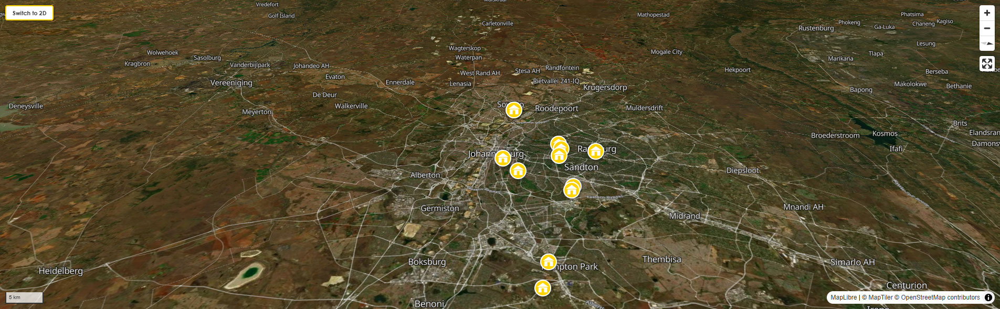
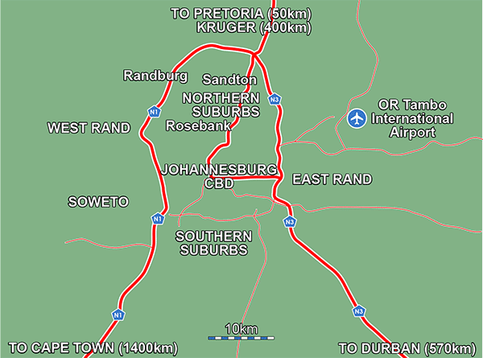

BackpackersBible.com
Johannesburg

Let's be honest with you upfront, because this guide respects your intelligence: Johannesburg is not Cape Town. It will not let you wander freely between neighbourhoods, consult your phone on the street corner, or stumble into an interesting area by accident. It is a city that rewards deliberate, informed travel — and punishes inattention. That is not a reason to avoid it. It is a reason to understand it before you go.
Here is what awaits the traveller who does understand it: a city unlike any other on the continent, built on gold and contradiction and ten million intersecting lives, with a history that explains more about the modern world than almost anywhere else you could go. The Apartheid Museum. Soweto. The world's best amapiano clubs. Melville's 7th Street on a Saturday evening. The Rosebank Sunday Market. The Johannesburg Zoo at dawn. These are not consolation prizes. They are world-class experiences that no other city on earth can offer. But you access them through hubs, by Uber, with your wits about you. That is the deal. Most travellers who accept it have the time of their lives.
The ones who don't accept it — who assume Africa's largest city operates like Amsterdam or Barcelona — tend to have a harder time. This guide is designed to make sure you are not one of them.
Johannesburg was not founded the way most cities are — by a river, a harbour, or a strategic ridge. It was founded by accident. In 1886, a prospector found gold-bearing rock on a farm on the Witwatersrand, the high ridge of grassland that runs east to west across what is now Gauteng. Within three years, 100,000 people had arrived from four continents to extract it. Within a generation, the largest man-made urban forest in the world had been planted to stabilise the mine-dump landscape — the jacaranda and eucalyptus trees that turn the northern suburbs purple every October. There was no plan. There was gold, and then there was a city.
That origin — extractive, improvised, chaotic, and cosmopolitan from day one — explains almost everything about modern Johannesburg. It is not a city built around a single community or a single identity. It is a city of layers: Boer farms, British mining camps, the Victorian CBD that was deliberately abandoned in the 1990s and is only now being partially reclaimed, the apartheid-engineered suburbs, the post-1994 migration, the new Black middle class reshaping the northern suburbs faster than any planner anticipated, the township economy driving more of this city's commercial life than most visitors ever see. To be in Johannesburg is to be inside a process that hasn't finished yet. Most visitors find this invigorating. A few find it overwhelming. Both responses are correct.
What Johannesburg is not: a transit point. Too many backpackers treat it as a night between flights. This is a genuine mistake. Give it at least four days. The city repays the time investment significantly.
The Witwatersrand gold reef — the single richest deposit of gold ever discovered on earth — sits directly under the modern city. The mine dumps, those flat-topped hills of yellow-grey waste rock visible from the highway as you drive in from the airport, are the literal residue of more than a century of extraction. An estimated 40% of all the gold ever mined in human history came from within a 50-kilometre radius of where you are standing. Sit with that for a moment.
The gold did not make South Africa equal. It made it more unequal, more violently. The mining industry required an enormous, cheap, controlled workforce. The apartheid system — formally in place from 1948 to 1994, but with roots in colonial labour laws going back to the early 20th century — was designed in very large part to supply it. Black workers were housed in single-sex hostels in the townships, prohibited from bringing families, paid a fraction of white wages, and subject to pass laws controlling their movement in their own country. Soweto — the South Western Townships — was not an accident of urban growth. It was a planned labour reservoir, built far enough from the white city to be invisible and close enough to service it by morning. More than three million people live there today. It is the largest township in Africa and one of the most culturally vital places on the continent.
Understanding even a fraction of this history will transform your time in Johannesburg. Without it, you are just a tourist moving between safe zones. With it, you begin to read the city — to understand why the CBD was abandoned and who was pushed out, why Soweto feels the way it feels, why the Apartheid Museum exists where it exists, why the people you meet carry the specific kind of resilience and warmth and occasional exhausted irony that they carry. The history is not background noise. It is the frequency everything else is broadcast on.
The single most important thing to understand about Johannesburg, before you arrive, is this: it does not work the way a European city works. You cannot stay somewhere central and walk to the interesting parts. There is no single "centre" from which everything radiates. The city is a vast, sprawling patchwork of distinct zones — some safe and welcoming, some genuinely dangerous — connected by motorways rather than pedestrian streets. The correct mental model is hub-and-spoke: you choose a safe hub to base yourself, and you travel out from it by Uber to the spokes that interest you.
This is not a deprivation. It is simply a different way of moving through a city. Uber in Johannesburg costs almost nothing — a 15-minute trip across the northern suburbs is €2–€3. Once you accept that the Uber is your street, and your hub is your neighbourhood, the city opens up.
Rosebank is, by some distance, the most logical base for a first-time visitor to Johannesburg. It is an upscale, walkable node — genuinely walkable, within its own boundaries — with a Gautrain station, two major malls (Rosebank Mall and The Zone), the Rosebank Sunday Market on the rooftop every week, excellent restaurants and coffee shops on the immediate streets, and a security presence that makes daytime street life feel genuinely relaxed. The Gautrain connection is the other decisive advantage: Sandton is 10 minutes by train, the airport is 30 minutes. You can land at OR Tambo, ride the Gautrain to Rosebank, check in, and be eating dinner within 90 minutes of wheels-down — without a single Uber, without navigating traffic, without any of the stress that typically accompanies arrival in an unfamiliar African city. For a solo traveller, a couple, or anyone visiting Johannesburg for the first time, Rosebank is the answer.
Adjacent to Rosebank, the leafy northern suburbs of Parkhurst and Greenside have their own "high streets" — 4th Avenue in Parkhurst, Greenside's Barry Hertzog Avenue — lined with boutiques, independent restaurants, coffee shops, and bars that have served their communities for decades. These streets are safe for walking during the day and early evening, with a neighbourhood quality that is the closest Johannesburg gets to the kind of European street culture you might be used to. Explorer Backpackers, the highest-rated hostel in the city, sits on Parkhurst's own 7th Street. If you want a quieter base with more local character than Rosebank's mall environment, the Parkhurst-Greenside corridor is ideal.
Melville is the bohemian soul of the city — a slightly faded, genuinely characterful suburb where Wits academics, journalists, musicians, NGO workers, and long-stay travellers have been eating, drinking, and arguing since the 1990s. The strip of restaurants, bars, bookshops, and coffee shops along 7th Street and 4th Avenue is unlike anything else in Johannesburg: unpretentious, mixed, genuinely social, and a world away from the glass towers of Sandton or the curated cool of Maboneng. Saturday mornings here — coffee, a bookshop, the Melville Artisanal Market, an afternoon that turns into an evening without you noticing — are one of the best things Johannesburg offers. For travellers planning a stay of more than a week, Melville is where you begin to feel like you live in the city rather than visit it.
Sandton is Johannesburg's financial district — the glass towers, the Nelson Mandela Square, the luxury hotels, Sandton City mall. It is extremely safe, extremely polished, and almost entirely irrelevant to backpacker travel except as a transport node (the Gautrain station) and as a shopping destination if you need to replace equipment. If you are here for the culture, the food, and the human experience of Johannesburg, Sandton is not where you live — it is where you change trains.
Maboneng — "place of light" in Sotho — is the most talked-about neighbourhood in Johannesburg, and it deserves its reputation. A regenerated precinct on the eastern edge of the CBD, it is a dense, walkable island of galleries, rooftop bars, street art, independent restaurants, and cultural energy unlike anything else in the city. Curiocity Backpackers, on Fox Street, is among the best-reviewed hostels in Africa. On a Saturday evening or a Sunday market morning, the energy in Maboneng is something you will not find in Rosebank or Sandton — it is raw, creative, cosmopolitan, and specifically African in a way that the northern suburbs are not.
However: Maboneng is an island. The precinct itself is well-managed and secure, with 24-hour private security on every corner. The streets immediately surrounding it are not. You cannot walk from Maboneng to Braamfontein. You cannot stroll to the nearest shop two blocks away without a considered assessment of which two blocks. The drive in from the northern suburbs, through the CBD, passes through areas that experienced travellers describe as genuinely uncomfortable. This is not reason to avoid Maboneng — it is reason to arrive by Uber directly to the precinct, stay within its boundaries, and leave by Uber. Do not walk outside the designated Maboneng blocks without a local who knows exactly where the boundary lies. One block can be a trendy café; the next can be a serious-risk street. Ask your hostel to be specific about the boundaries before you go out on foot.
For post-Covid context: Maboneng went through a difficult period during and immediately after the pandemic, with several businesses closing and the street-market scene thinning. Reviews from 2024–2025 suggest the precinct has largely recovered its energy, particularly on weekends, but it is quieter midweek than its pre-2020 peak. Curiocity specifically continues to operate at a high standard and is an excellent base for exploring the precinct. For travellers who specifically want the inner-city cultural experience — and who understand and respect the precinct's boundaries — it remains one of the most compelling places to stay in the city.
Soweto is not a suburb. It is a city within a city — 30 kilometres southwest of the CBD, home to between 1.5 and 3 million people, and the cultural and political heartland of the entire country. The Hector Pieterson Memorial, Vilakazi Street (where both Mandela and Desmond Tutu lived), the Orlando Towers, the shisa nyama culture of a Sunday afternoon — none of it is replicable anywhere else. Go. Go with a guide. Do not attempt to navigate it alone. Your hostel will have recommended operators — use them. Lebo's Soweto Backpackers, in Orlando West, is the exceptional option for anyone who wants to stay in Soweto itself rather than visit it as a day trip — and it is consistently the highest-rated hostel in the greater Johannesburg area.
Johannesburg invented kwaito — and that matters more than it sounds. Emerging in the Soweto townships in the early 1990s, built on slowed-down house music overlaid with Zulu, Sotho, and Tswana vocals delivered in a deliberately casual style that carried equal parts pleasure and defiance, kwaito was the sound of young Black South Africans saying: we survived, we are still here, and we are going to celebrate on our own terms. Artists like Brenda Fassie, TKZee, and Mandoza built a genre so specific to its time and place that it cannot be fully explained — it has to be heard in a room where people who grew up with it are present.
Today, Johannesburg's clubs run on amapiano — the log-drum, smooth-piano genre that emerged from the East Rand townships around 2014 and has since gone genuinely global. But Joburg's version is harder and more urban than anything you'll hear elsewhere, mixed with afrohouse and gqom. The jazz scene, rooted in the Sophiatown era of the 1950s, has never stopped — The Orbit in Braamfontein programmes live jazz five nights a week. The annual Jazz in the Lights festival at the Zoo in March is one of the city's great outdoor events. Konka in Soweto is the destination for amapiano at its loudest and most celebratory. Melville's 7th Street provides the relaxed end of the spectrum. Whatever your register, Johannesburg has music that belongs only to this place.
South Africa has the highest Gini coefficient — the standard measure of income inequality — of any country that keeps reliable records. Johannesburg, as the economic capital, is where that inequality is most starkly visible.
You will eat a good breakfast in a Rosebank café for the price of a London bus ticket and drive past an informal settlement on the way. You will go to Soweto, and your guide will describe growing up in a two-room house with nine family members with a matter-of-factness that makes the description more devastating, not less. You will try to tip well and feel that the gesture is both necessary and wildly insufficient at the same time.
The city is not asking for your guilt. It is asking for your attention. Spend money at locally owned businesses. Tip well and directly. Book township tours with community-based operators rather than large commercial companies. Talk to people. Listen more than you speak. Understanding even a fraction of the history will make your time here significantly more real than if you treat the inequality as an unfortunate backdrop to an otherwise enjoyable trip.
Johannesburg sits at 1,750 metres above sea level on the highveld plateau — and the climate is nothing like what Europeans expect from a subtropical African city. Summers (October–March) are hot (25–30°C) but also the season of dramatic afternoon thunderstorms: the kind that arrive without warning, turn the sky yellow-green, drop an enormous quantity of rain in forty minutes, and clear as if they never happened. This reorganises your afternoon plans periodically but is not a problem — the storms are spectacular and the air afterwards, washed clean at altitude and smelling of red earth and jacaranda, is one of the sensory things you will remember.
Winters (June–August) are dry and can be genuinely cold — sunny days of 18–20°C followed by nights that drop near freezing. This shocks people who imagined Africa as uniformly warm. Pack a proper layer. The upside: crystal clear skies and extraordinary light.
The best time for most backpackers is September–November: warm, pre-storm season, the jacaranda trees in the northern suburbs in full purple flower (genuinely worth seeing — the whole city smells different), and the city at full operating energy. The Jazz in the Lights festival happens annually in March at the Johannesburg Zoo — worth building a trip around if it falls within your window.
First-timers and safety-conscious travellers: Rosebank or Parkhurst. The Gautrain access, the walkable streets, and the security infrastructure of the northern suburbs make this the most stress-free base. Explorer Backpackers in Parkhurst is consistently the highest-rated hostel in the city on every major platform.
For the classic backpacker experience: Melville. Social, walkable within the suburb, great street life on 7th, more local character than Rosebank. The best choice for longer stays where you want to feel embedded in a neighbourhood rather than insulated in a mall district.
For the inner-city cultural experience: Maboneng — but only if you understand the precinct boundaries and commit to moving by Uber rather than on foot beyond them. Curiocity Backpackers on Fox Street is excellent. Do not be casual about navigating to or from this area on foot.
For the deepest South Africa experience: Lebo's Soweto Backpackers in Orlando West. Not a transit option — a cultural immersion. Give it at least two nights and take every tour on offer. Consistently the highest-rated hostel in the wider Johannesburg area on most platforms.
For the airport, first or last night: The East Rand cluster — Backpackers Connection, Brown Sugar, Mikasa Sukasa — are all within 15–20 minutes of OR Tambo and eliminate the stress of the first or last Joburg transit. Alternatively, use the Gautrain from the airport directly to Rosebank (30 minutes) and stay there from night one.
Johannesburg is significantly cheaper than any comparable city in Western Europe. A craft beer in a Melville or Rosebank bar: €1.50–€2.50. A sit-down meal: €6–€12. A shisa nyama plate of grilled meat with pap in Soweto: €2–€4. An Uber across the northern suburbs: €1.50–€3. The Apartheid Museum: approximately €6. A guided Soweto bicycle tour from Lebo's: approximately €20–€30. A full day in Pilanesberg: entrance approximately €12 plus hire car. The purchasing power of a European budget in Johannesburg is transformative — you can eat, drink, and experience this city at a quality that would be simply unaffordable at home.
Uber and Bolt are the non-negotiable transport tools. The city is not walkable between districts, distances are significant, and private ride-hailing is cheap, reliable, and safe. Confirm plate and driver name before getting in. Never take an unmarked vehicle that approaches you at a rank.
The Gautrain is world-class — fast, air-conditioned, safe. It connects OR Tambo Airport to Marlboro, Sandton, Rosebank, Park Station (CBD), and Hatfield in Pretoria. The airport-to-Rosebank journey takes approximately 30 minutes and is the optimal arrival route for anyone staying in the northern suburbs. The airport-to-Sandton leg takes 15 minutes. Use it for airport transfers and Sandton-to-Rosebank hops. It does not reach Maboneng, Soweto, Melville, or Parkhurst — Uber covers those gaps.
Hire car: Useful for day trips to Pilanesberg, the Cradle of Humankind, and the Magaliesberg. Not recommended for navigating central Johannesburg — traffic is heavy, the carjacking risk at certain traffic lights is real, and parking requires engaging with the informal "car guard" culture (tip R5–R10 and your car will be watched; don't tip and the outcome may be different). If you hire a car, keep windows up in slow traffic and do not drive unfamiliar CBD streets at night.
Minibus taxis: How the majority of Johannesburg moves. Efficient, cheap, and entirely reliant on local knowledge — specific hand signals, informal ranks, an unwritten fare structure. Not the right system for a first-time visitor. Use the Rea Vaya BRT (Bus Rapid Transit) on specific inner-city routes if your hostel recommends it for a particular journey; otherwise, Uber is the answer.
This is one of the most important warnings in this entire guide, and it comes from direct experience: do not walk outside Park Station.
Park Station is Johannesburg's central transport hub for long-distance buses (Greyhound, Intercape, Translux) and commuter trains. It sits in the CBD, in one of the highest-risk areas in the city for tourist mugging. The immediate streets around the station — particularly the Market Street side — are genuinely dangerous in a way that is not obvious from inside the building. Multiple travellers have been assaulted within one or two blocks of the station, including in broad daylight. One block from the entrance is not a safe buffer. It is enough distance to be seriously vulnerable.
The correct procedure if you are arriving or departing by bus at Park Station: book your Uber before you leave the building, give the driver the Rissik Street entrance as your pickup point (which keeps you within the station precinct), and go directly from the building to the car. Do not step outside to look for your driver. Do not walk to find food. Do not assess the area. You will stand out immediately as a tourist — large backpack, unfamiliar with the surroundings, probably consulting your phone — and you will be a target. The walk takes thirty seconds; the consequences can be severe. Many long-distance bus operators have shifted departures to the OR Tambo area, which is significantly safer — check with your operator whether your service departs from Park Station or from the airport bus terminal before you travel.
You should go to Soweto. The question is how, not whether. Go with a community-based tour operator — your hostel will have specific recommendations — or go directly by Uber to a specific, known destination (the Hector Pieterson Museum, Vilakazi Street, or a shisa nyama in Orlando). What you should not do is attempt to navigate Soweto independently without local guidance. The formal tourist sites — Vilakazi Street, the Mandela House, the Hector Pieterson Memorial — are well-trafficked and safe to visit. The roads connecting them are not all the same, and a wrong turn in an unfamiliar township is the kind of mistake that can have serious consequences. A guide removes this risk entirely and adds value that no independent visit can match: the stories, the context, and the human connection are what make Soweto the essential experience it is.
By Gautrain or Uber — never by the metered taxis operating outside the arrivals hall, which are significantly more expensive and, in some documented cases, have been involved in "following" incidents where criminals track tourists from the airport to their accommodation. The Gautrain departs from a station directly connected to OR Tambo's international terminal and reaches Sandton in 15 minutes, Rosebank in approximately 30. Buy a Gautrain card at the station (loaded with credit) before boarding. If your hostel is in Melville, Parkhurst, or a suburb not on the Gautrain line, take the train to Rosebank or Sandton and book an Uber from there — this is the safest and most cost-effective arrival route.
If you book an Uber directly from the airport: use the designated Uber pickup zones inside the terminal, confirm your driver's name and plate on the app before approaching any vehicle, and do not accept a lift from anyone who approaches you independently.
Load shedding is South Africa's system of scheduled rolling power cuts — a consequence of decades of under-investment in Eskom, the state power utility — and Johannesburg gets it more severely than Cape Town, which has its own supplementary municipal energy capacity. In 2024–2025, South Africa went through extended periods of Stage 0 (no cuts) after emergency infrastructure repairs, but this may not hold. Download the EskomSePush app the moment you land — it gives you the scheduled outage timetable up to two weeks in advance, suburb by suburb. All decent hostels have inverters or generators. Restaurants and bars in Rosebank, Melville, and the northern suburbs are well-equipped. It is an inconvenience, not a crisis, and most travellers adapt within a day.
South Africa's Constitutional Court decriminalised the private use and personal cultivation of cannabis by adults in 2018 — you can legally use it in a private space, such as a hostel room, if the hostel permits it. You cannot legally buy or sell it, and public consumption remains a criminal offence. An informal network of "cannabis clubs" and unlicensed outlets operates across Johannesburg; these function in a legislative grey area. A formal regulated retail market had not been established as of early 2026. Use common sense, particularly in the northern suburbs where police attitudes are less permissive than in Cape Town.
More than anywhere else in South Africa, because Johannesburg is the country's migration hub. Zulu and Sotho are the dominant languages in the township and working-class areas. Afrikaans is spoken in the suburban and Afrikaner community circles. English is the commercial and professional lingua franca and is spoken by virtually everyone in the tourist zones. In Maboneng, Braamfontein, and the northern suburbs you will also hear Shona (Zimbabwean migrants), Amharic and Oromo (Ethiopian community), French (DRC and Central African diaspora), and a rotating selection of European languages from other backpackers. The linguistic diversity is itself a signal of how the city functions as a continental hub — Johannesburg is where Africa comes to work.
A few words of township slang are immediately useful: yebo (yes, agreed), howzit (hello, how are you — this one is universal), lekker (nice, good, enjoyable — imported from Cape Town Afrikaans but used everywhere), eish (an all-purpose expression of surprise, frustration, or commiseration), sharp sharp (okay, understood, all good). Using these — even badly — is invariably received warmly.
South Africa has the most progressive constitution in the world on LGBTQ+ rights — same-sex marriage has been legal since 2006. In practice, Johannesburg's northern suburbs (Rosebank, Melville, Greenside) have an established and visible LGBTQ+ social scene, and open same-sex couples are comfortable in these environments without significant risk. The inner-city and township areas require more situational awareness — the theoretical legal protection does not always translate to uniform social acceptance at street level. The annual Joburg Pride parade, held in Rosebank each October, is one of the largest in Africa. For LGBTQ+ travellers, the northern suburbs provide the most consistently comfortable environment.
Alexandra — "Alex" — is one of Johannesburg's oldest and most historically significant townships, adjacent to Sandton and, famously, separated from Africa's richest square mile by one road. Nelson Mandela lived in Alexandra as a young man. It has a rich and complex history. It also has a severe infrastructure deficit, high population density, and levels of social tension that make it significantly more volatile for independent visitors than Soweto. Do not attempt to visit Alexandra without a local tour operator who has established relationships in the community and knows the current situation on the ground. The contrast between Alexandra and Sandton — two minutes apart — is the starkest illustration of Johannesburg's inequality anywhere in the city. Understanding that contrast, through a guided visit, is genuinely worthwhile. Understanding it by wandering in alone is not a safe way to do it.
Shisa nyama: Grilled meat over coals at an open-air braai attached to a bottle store. This is the definitive Johannesburg eating experience and it is at its best in Soweto on a Sunday. Point at what you want, eat it standing or sitting, wash it down with cold beer from the crate. Costs almost nothing. Tastes extraordinary.
Bunny chow: A hollowed-out quarter loaf of white bread filled with curry — a Durban Indian invention that has spread nationwide. Available from takeaway joints across Johannesburg's working-class areas and from the better market food stalls. Filling, cheap, and very good.
Pap and chakalaka: Stiff maize porridge (pap) served with chakalaka — a spiced relish of beans, tomato, peppers, and chilli. The staple of the township kitchen and the base of almost every shisa nyama plate. Simple, sustaining, and specifically South African.
Boerewors: The classic South African farm sausage — a spiralled, coarsely minced beef and pork sausage seasoned with coriander and clove, grilled over coals. Available everywhere from upmarket Rosebank butchers to petrol station forecourts. The quality range is enormous. At the top end it is one of the best things you will eat in Africa.
The Neighbourgoods Market / Rosebank Sunday Market food stalls: Both markets have food vendor sections where you can eat your way through South African, Ethiopian, Nigerian, Zimbabwean, and Cape Malay cuisines in a single sitting. Budget about €8 and eat widely.
Johannesburg has a serious crime problem and pretending otherwise would be irresponsible. The vast majority of travellers who visit with the right knowledge, in the right areas, with the right habits, have a trouble-free experience. But the margin for casual inattention is much smaller than in Cape Town, and significantly smaller than in any European city. Here is what you actually need to know.
Stay in these areas:
Rosebank — Upscale, walkable, Gautrain-connected, highly policed. The safest daytime street environment in Johannesburg for an international visitor. Walk freely during the day; use Uber after dark for any journey longer than the immediate restaurant strip.
Parkhurst and Greenside — Leafy, affluent, residential. The 4th Avenue strips are safe in daylight and early evening. Standard urban awareness applies on quieter residential streets after dark.
Melville (7th Street and immediate area) — Active street life from morning to late evening. The bar and restaurant strip has a natural safety from its constant foot traffic. Standard precautions on quieter residential streets adjacent to the main strip.
Sandton — Safe and heavily policed. Less relevant to backpackers but excellent for the Gautrain and for shopping (Sandton City has a vast outdoor gear section if you need to replace kit).
Maboneng Precinct (within the designated blocks only) — Safe inside the precinct, with 24-hour private security. Do not walk outside the precinct boundary. Arrive and depart by Uber. Ask your hostel exactly which streets constitute the boundary before you walk anywhere. One block outside the boundary is a fundamentally different environment.
Avoid these areas independently:
The Johannesburg CBD (general) — During the day, certain specific areas (Gandhi Square, certain commercial streets) are manageable, but the CBD is a labyrinth where one wrong turn puts you in a high-risk situation without warning. Explore the CBD only via the City Sightseeing Red Bus (hop-on hop-off, safe, guided), with a reputable walking tour operator, or with a local who knows the specific current conditions. Do not navigate it independently by foot.
Hillbrow and Berea — High-density, high-crime. Architecturally fascinating; genuinely dangerous for independent exploration. Exceptional guided walking tours exist for these neighbourhoods — they are worthwhile, and they should be the only way you enter.
Yeoville — Once Johannesburg's bohemian heart, now volatile. The Rockey Street market is culturally significant but the mugging risk for solo and paired tourists is high. Guided visits only.
Alexandra Township — Not to be visited independently. Guided tours only, with an operator who has current, specific community relationships.
Anywhere on foot after dark outside your immediate hub neighbourhood — The rule is universal: after dark, Uber between destinations. This applies in Rosebank, in Melville, everywhere. The distance does not matter. The Uber costs R30. Use it.
Phone snatching is the single most common crime affecting visitors, and it has become increasingly brazen — motorbike riders who mount pavements to snatch phones from hands at walking speed operate in busy areas including Rosebank, Melville, and wherever tourist foot traffic concentrates. The rule is absolute: keep your phone in your pocket when you are on the street. Check your map before you leave, not while you walk. Use your phone inside a café, a shop, or a building. A crossbody bag with a zip rather than a backpack with an external pocket. If your phone is taken: do not resist.
Carjackings happen overwhelmingly at three points: traffic lights in slower-moving areas, underground parking structures, and quiet residential streets after dark. If you are driving: windows up at red lights, do not stop on an empty street if you can avoid it, and if you feel followed, drive to the nearest petrol station rather than your accommodation. Most visitors who hire cars in Johannesburg never encounter this. Knowing the risk profile and adjusting your behaviour is not paranoia — it is what every Johannesburg resident does every day.
Already covered in the FAQs above, but worth repeating as a standalone safety point because it catches people who didn't read that section: the streets surrounding Park Station are among the most dangerous in the city for tourists. Multiple documented muggings occur within one and two blocks of the station, including during the day. Book your Uber from inside the building, use the Rissik Street entrance as the pickup point, and go directly to the car. Do not step outside to assess the area. Your large backpack marks you immediately as a tourist.
Card skimming and robbery at ATMs are more prevalent in Johannesburg than in most other South African cities. Use ATMs inside banks or inside shopping malls only — never freestanding street machines. Shield your PIN always. Inform your European bank before you travel that you will use your card in South Africa; many banks freeze South African transactions as suspicious, and resolving this from inside a Johannesburg shopping mall is easier than it sounds but entirely avoidable if you call ahead.
Plain-clothes individuals who flash what appears to be a police badge and claim you are under investigation for a drug or currency offence — requesting to inspect your passport and wallet — are not police. Real South African Police Service officers carry stamped SAPS identification and do not conduct random tourist stops in plainclothes on the street. If this happens: do not hand over your passport or wallet. Ask to be taken to the nearest police station. Say it calmly and specifically. The confrontation typically ends immediately. Call 10111 if it does not.
A documented pattern at OR Tambo involves criminals identifying tourists in the arrivals hall, following them to their accommodation, and robbing them there. This makes your choice of airport transport directly relevant to your security: a Gautrain journey — where your destination is not visible to anyone watching you at the airport — is more secure than a taxi where a driver knows your accommodation address and that information could be communicated. Use the Gautrain if your hostel is on the line; use an Uber booked from within the arrivals terminal if not. Stay aware of whether you are being followed, particularly on the first and last days of your trip.
You are going to the Apartheid Museum. This is not a suggestion. It is a moral obligation dressed up as one of the most brilliantly designed museum experiences anywhere in the world.
The building begins its work before you reach the first exhibit. At the entrance, your ticket designates you either "White" or "Non-White" — randomly, arbitrarily — and you enter through the corresponding gate into a separate initial gallery, before the two paths rejoin. The point lands with a physical force that reading about apartheid does not prepare you for. What follows is a three-to-four-hour chronological account of the apartheid era: the legislation, the forced removals, the torture, the resistance, the 1994 election. Go in the morning when you are fresh. It will occupy your thoughts for the rest of the day, and that is exactly what it is supposed to do. Entry approximately €6. Situated adjacent to Gold Reef City on the southern edge of the city, 20 minutes by Uber from Rosebank or Melville.
A full day in Soweto is the single most important experience available in Johannesburg, and possibly in South Africa. Go with a community-based guide — your hostel will have specific recommendations — and go with an open schedule.
The Hector Pieterson Museum tells the story of the 1976 Soweto Uprising with exceptional care and honesty. The photograph of twelve-year-old Hector Pieterson being carried by Mbuyisa Makhubu after being shot by police — taken by Sam Nzima and published worldwide — is one of the most important photographs of the twentieth century, and the museum gives it the context it deserves. Cost approximately €3. The Mandela House on Vilakazi Street — the modest brick house where Nelson Mandela lived from 1946 until his imprisonment in 1962 — is preserved as he left it. Bullet holes from security police attacks are still visible in the exterior walls. Cost approximately €4.
The shisa nyama culture — the open-air braai attached to a bottle store where meat is grilled over coals and cold beer is sold by the crate, in the company of whoever else turns up on a Sunday afternoon — is most alive, most communal, most itself in Soweto. Go on a Sunday. Point at what you want. Eat standing or sitting. This costs about €3–€5 and is one of the best meals you will have in South Africa.
The Orlando Towers — two decommissioned power station cooling towers painted floor to ceiling with spectacular murals — can be bungee jumped from the bridge that spans the gap between them: 100 metres of freefall over a mural-covered industrial void. Cost approximately €35. You can also abseil, bridge swing, or simply stand at the base and look up at the art. Either way, they are extraordinary.
Walter Sisulu Square in Kliptown — the oldest surviving urban settlement in Soweto, and the place where the Freedom Charter was adopted in 1955 — has a real community market around it where locals shop for everything from electronics to fresh produce to hand-sewn clothing. Walk through it slowly. This is not a tourist market.
Every Sunday from 9am to 4pm, the rooftop of Rosebank Mall transforms into one of the best and most long-running markets in South Africa. The Rosebank Sunday Market has been operating for over 30 years — "Voted Best of Joburg Craft Market" is not just a tagline — and the range of traders is exceptional: more than 140 stalls offering handmade crafts, vintage clothing, African art objects, jewellery, gourmet street food, homemade deli items, and bric-a-brac, spread across a spacious covered rooftop with views of the Joburg skyline.
The food section is the place to eat your way through South African, Ethiopian, Nigerian, and Cape Malay cuisines simultaneously. Budget about €8 and eat from every stall that smells interesting. The twice-monthly car boot sale (on the last two Sundays of the month) adds vintage clothing and antiques to the mix. Live music plays every last Sunday of the month from noon to 2pm. The Rosebank Gautrain station is a 5-minute walk from the market entrance — you can arrive directly from the airport, check in, and be wandering this market within an hour of landing. It is one of the best possible introductions to Johannesburg.
If you want a first glimpse of African wildlife before committing to a full safari, the Johannesburg Zoo on Jan Smuts Avenue in Parkview is a solid option. It is not the Kruger — no animal experiences the savanna from a zoo enclosure — but the species range is comprehensive, the enclosures are among the better-maintained in Africa, and for a backpacker who wants to see a lion, a giraffe, and a white rhino without a two-hour drive and a game park entrance fee, it delivers. Entry approximately €8. Budget three to four hours. The zoo is open daily from 8:30am to 5:30pm.
Zoo Lake, immediately adjacent to the zoo, is one of Johannesburg's most genuinely pleasant outdoor spaces — a landscaped lake in Emmarentia suburb, ringed by lawns where Joburg residents jog, picnic, paddle rowing boats, and do yoga on Saturday mornings. The restaurant on the lakeside (Moyo Zoo Lake is the established option) serves good food in a garden setting with peacocks wandering between the tables. A Sunday afternoon at Zoo Lake — lunch at the restaurant, a walk around the lake, watching the city's most at-ease residents doing exactly what they do every weekend — is one of the most relaxed and most human things Johannesburg offers. It is free to enter the park; the restaurant is moderately priced by European standards (€8–€14 for a main course).
And then there is the annual Jazz in the Lights festival — held at the Johannesburg Zoo each March (consistently the third Saturday in March). The festival brings together local and international jazz artists for a full day of music inside the zoo, with simultaneous access to the animals. The combination sounds odd and works completely: jazz playing over the enclosures, families with picnic blankets on the zoo lawns, the Joburg skyline visible over the trees. It is reimagined from the original "Jazz on the Lake" format, and the 2024 and 2025 editions featured artists including Andile Yenana, Simphiwe Dana, Ami Faku, and Maleh. If you are in Johannesburg in March, check the dates — this is not to be missed. Tickets via Webtickets.
Melville rewards slow, undirected time. The correct way to experience it is not to have a plan. Walk to 7th Street and start at one end. There is a bookshop that will hold you for an hour if you let it. There is a coffee shop where the coffee is unreasonably good and the terrace faces the street and the morning belongs entirely to you. There are restaurants that have been serving the same excellent food for a decade and have no intention of renovating their furniture. There is a record shop. There are bars that open at noon and close when the last person leaves, which is sometimes 2am.
The Saturday Melville Artisanal Market, held at the Melville Kruis Church on 7th Street, is a weekly community market with handmade soaps, artisanal food products, African crafts, and secondhand clothing at honest prices — not a tourist market but a neighbourhood one. The Saturday morning energy on 7th, with the market running, coffee shops full, and the whole suburb engaged in its weekend routine, is one of those experiences that reminds you why you left home to travel in the first place. It is an authentic neighbourhood doing what it does on a Saturday morning, and you are welcome in it.
For evenings, Melville's 7th Street is one of the safest and most active dining and bar environments in Johannesburg — the constant foot traffic from the restaurant and pub strip creates a safety through presence that the quieter northern suburb streets lack after dark. Restaurants range from genuine pizza and pasta to South African game meat to Indian, Ethiopian, and Korean. Bars range from the long-established (the kind that have had the same regulars for fifteen years) to the newer craft beer and cocktail operations that have opened in the last decade. The mix of Wits academics, journalists, artists, and travellers makes the conversation at any table unpredictable in the best way.
One of the things Johannesburg offers that no other city can is the experience of radical contrast within a single day. This contrast is not comfortable. It is also not optional if you want to understand the place.
Spend a morning in Sandton City or Rosebank Mall — the most expensive commercial real estate in Africa, where the coffee shops are indistinguishable from those in any European capital, the luxury brands are all present, and the security presence is visible and pervasive. Then take a 30-minute Uber to Soweto, eat a R50 plate of shisa nyama on a plastic chair outside a bottle store, and watch a Sunday afternoon in Orlando West happen around you. The physical distance between these two experiences is approximately 35 kilometres. The experiential distance is impossible to quantify.
Most Johannesburg residents — regardless of background — live their lives largely within one of these worlds or the other. As a visitor, you have the unusual ability to cross between them in a single day. Do it deliberately, with respect, and with the Apartheid Museum visit already under your belt so you understand the history that produced the gap. Johannesburg without the contrast is a pleasant northern suburb city break. With it, it is one of the most education-intensive travel experiences on the planet.
If you need to replace or upgrade backpacking equipment — boots, a sleeping bag, a daypack, a rain jacket, a headlamp — Johannesburg is the best place in South Africa to do it. Sandton City and Eastgate Mall both have large, well-stocked Cape Union Mart branches (South Africa's premier outdoor equipment retailer), as well as Trappers Trading and REI-equivalent stores that carry most international brands at prices significantly below what you would pay at home. The rand exchange rate makes technical outdoor gear genuinely cheap for European visitors. Buy your rain jacket in Johannesburg; it will cost you 40% less than in London.
For African crafts and souvenirs, the Rosebank Sunday Market is the best-value and most authentic option in the northern suburbs — 30 years of curation has produced a very good selection of handmade Zulu beadwork, Ndebele-painted objects, soapstone carvings, hand-printed fabric, and leatherwork at fair prices. The African Craft Market adjacent to Rosebank Mall operates throughout the week. The Neighbourgoods Market in Maboneng (Saturdays) has a smaller craft section alongside the food stalls, with a younger, more design-conscious aesthetic. For vintage clothing, the Rosebank Sunday Market car boot sale (last two Sundays of the month) consistently produces good finds.
Sandton City and Rosebank Mall are worth half a day as experiences in themselves, independent of any purchasing intention. They are among the largest and most sophisticated malls on the African continent — part commerce, part social infrastructure, part air-conditioned city within a city. The food courts, the bookshops, the coffee — all of this is good and cheap by European standards. More interesting is the observation: in a city where most outdoor public spaces carry ambient risk, the mall has become the gathering place for Johannesburg's middle class, which makes it a genuinely revealing social environment if you spend enough time in it with your eyes open rather than your shopping list in hand.
Constitution Hill:
On the ridge above Braamfontein, the site of the old Johannesburg Fort and Number Four Prison — where Gandhi was imprisoned, where Mandela was held, where thousands of Black South Africans were incarcerated under pass laws — now houses the Constitutional Court of South Africa. The court building was deliberately constructed using bricks from the demolished prison. The cells are preserved and open to the public. The courtroom itself — a space of extraordinary thoughtfulness and intentional beauty — is open for public viewing when court is not in session. Entry to the historic precinct approximately €5. The Constitutional Court gallery is free. Note: Braamfontein requires the same awareness as any inner-city Johannesburg neighbourhood — arrive and depart by Uber, do not walk far from the Constitution Hill complex itself.
The Cradle of Humankind:
Fifty kilometres northwest of Johannesburg, in the rolling grassland of the Magaliesberg foothills, is a UNESCO World Heritage Site containing the most significant concentration of early human fossil remains ever found. The Sterkfontein Caves have yielded fossils going back more than 3.5 million years — more than a third of the world's known hominid fossil record has come from this single site. The visitor experience includes the Maropeng Centre (well-designed exhibition on human evolution) and a guided descent into the caves past active excavation sites. The two-site combination ticket costs approximately €18. The cave tour takes 45 minutes and includes an underground lake of remarkable stillness and darkness. Go on a weekday morning. The drive out is through beautiful highveld grassland and, in spring, wild flowers on the rocky outcrops.
Pilanesberg Game Reserve:
Two hours' drive northwest of Johannesburg, Pilanesberg is the closest Big Five reserve to the city — 55,000 hectares in an ancient volcanic crater, with lion, elephant, rhino, buffalo, leopard, hippo, giraffe, and zebra in a self-sustaining ecosystem. Self-drive is possible with a hire car and a standard vehicle. Gate entry approximately €12 per person. Go before sunrise — most game activity is in the first two hours of daylight. The dawn drive on the crater rim, with mist in the valley and elephants crossing the road with total indifference to your presence, is one of those mornings that reorganises your sense of what a morning can be. If you do not have a hire car, several tour operators run day trips from Johannesburg — your hostel can arrange.
The Gold Reef City Mine Tour:
Adjacent to the Apartheid Museum, the Crown Mines shaft at Gold Reef City offers a descent 220 metres underground in an original mine cage. The shafts, the rock faces, the heat, the darkness, and the sheer scale of what was extracted from this geology over a century become physically comprehensible underground in a way they cannot be from the surface. The guides explain both the geology and the human history: who worked here, under what conditions, for what pay, with what consequences. The mine tour takes 90 minutes and costs approximately €12. Combine with the Apartheid Museum next door for a full and thoroughly sobering day out.
The Neighbours Market in Maboneng (Saturdays, Commissioner Street):
The Neighbourgoods Market — originating in Braamfontein and now on Commissioner Street in Maboneng — runs from 9am to 3pm on Saturdays and is the weekly cultural centrepiece of the inner-city precinct. The food stalls are the point: Ethiopian injera, Cape Malay curry, craft pizza, Durban bunny chow, Vietnamese bánh mì. Arrive by Uber directly to Commissioner Street. Eat from multiple stalls. Budget €8 for food and walk away satisfied. The market has thinned slightly post-Covid but remains a genuinely enjoyable Saturday morning. The people-watching from the upper gallery is excellent.
Walk Rosebank and Parkhurst: The 4th Avenue strip in Parkhurst — boutiques, independent restaurants, coffee shops, galleries — is one of Johannesburg's most pleasant pedestrian environments, free to walk during daylight hours. Window shop, sit in a coffee shop, watch the suburb go about its day. This costs the price of a coffee.
Zoo Lake (free entry to the park): Walk the circumference of the lake in Emmarentia — 2.5 kilometres of lawns, trees, rowing boats, and the particular sound of a Johannesburg suburb doing its Sunday morning thing. The lake is free to enter. The lakeside restaurant charges for food. The peacocks are included.
The Constitutional Court gallery (free): One of the finest collections of contemporary South African art in public hands, housed inside the Constitutional Court building on Constitution Hill. Open to the public when court is not sitting. Ask at the security desk for gallery access. No charge.
Wits Art Museum (free): On the Wits University campus in Braamfontein, the Wits Art Museum holds one of the most significant collections of African art on the continent — Ndebele beadwork, Zulu ceremonial objects, San rock art, contemporary South African painting. Small, well-curated, almost always quiet. Open Tuesday to Saturday. Braamfontein requires inner-city awareness — arrive by Uber and do not wander far from the museum.
Melville Koppies (free, guided walks on first and third Sundays): The rocky highveld outcrop preserved in the middle of Melville — the same ancient geology the gold prospectors found — with the original grassland species, Stone Age archaeological sites, and a view of the Johannesburg skyline to the south. Guided walks on the first and third Sunday of each month. Standing on the rocks above the suburb, with jacarandas below and the city visible in the distance, is the closest thing Johannesburg offers to a moment of genuine contemplative quiet.
Rosebank Sunday Market (free entry): Walking through the market costs nothing. You will spend money on food, because you will not be able to stop yourself. The entry, the atmosphere, the live music on the last Sunday of the month, and the rooftop Joburg skyline view are all free.
Maboneng street art (free): Walk Fox Street and the surrounding blocks slowly and look at the walls. The murals — floor-to-roofline commissions on multi-storey buildings — are among the best large-scale public art on the continent. Free, available every day, and best in the morning light. Stay within the precinct.
Johannesburg goes out late and goes out hard. The music — amapiano, afrohouse, jazz, hip-hop, and the electronic scene in Braamfontein — is reason enough to stay up on a Friday night.
For amapiano at its loudest and most celebratory: Konka in Orlando West, Soweto. A vast, spectacular venue that consistently hosts the biggest amapiano names in the country. Saturday nights here are genuinely unlike anything else in Johannesburg. Arrive and leave by Uber — book your return Uber before you want to leave, not at 2am outside the door. Worth every logistical complication.
For jazz: The Orbit in Braamfontein. Live jazz five to six nights a week, ranging from established names to emerging artists. The room is intimate, the sound is excellent, the audience listens with genuine attention. South African jazz has a tradition that goes back to the Sophiatown scene of the 1950s — hearing it live at The Orbit connects to that lineage directly. Cover approximately €6–€12. Book in advance for headline acts. Braamfontein at night requires inner-city awareness — Uber directly to and from the venue.
For a relaxed evening: Melville's 7th Street. The bars along the strip — most of them without pretension, most of them with beer on tap and a terrace — are where you go when you want conversation over spectacle. The strip is active until late, the foot traffic provides natural safety, and the evenings that start as a single beer and end at midnight are one of the defining Joburg experiences. Safe to walk between venues on the 7th Street strip itself; take Uber for any journey off it.
For the electronic and techno crowd: Braamfontein and the inner-city club precinct around AND Club and Carfax host international DJs and local electronic acts on weekends — fabric from London made its South Africa debut here in 2026 to sold-out shows. High-quality global club culture in a specifically African urban context. Uber in and out; do not walk the CBD streets between venues.
Johannesburg is the sporting capital of South Africa, and the live sport available here is genuinely world-class across three codes.
Football: The Soweto Derby (Kaizer Chiefs vs Orlando Pirates):
One of the most intensely supported football fixtures on earth. Both clubs were born in Soweto; both have support bases in the tens of millions across Africa. When they meet at FNB Stadium (Soccer City) — the 94,000-seat arena that hosted the 2010 FIFA World Cup Final — the result is an atmosphere that surpasses almost anything in European football: vuvuzelas, drums, mass chanting, and 90,000 people who care about the result with a fervour that is visceral. Tickets via Ticketmaster from approximately €5–€15. Check the PSL fixture list before you land — if the Soweto Derby falls within your visit, it is a priority above everything else on this list.
Rugby at Ellis Park:
Ellis Park in Doornfontein — 62,000 seats, two Rugby World Cup finals — is the home of the Lions. If a Springbok test match is scheduled here during your visit, attend without hesitation. South Africa are the reigning back-to-back Rugby World Cup holders. Ellis Park under a full Springbok crowd is one of the loudest sporting environments in the world. Tickets via Ticketmaster from approximately €10–€20 for club matches; book early for test matches.
Cricket at the Wanderers (The Bullring):
The Wanderers Stadium in Illovo is urban, enclosed, steep-sided, and extraordinarily loud — the "wall of sound" the home crowd generates has been cited by visiting captains as a genuine tactical factor. The SA20 season (January–February) and international fixtures are the primary draw. The grass hill (cheapest seats, best atmosphere) costs approximately €8. Bring a camp chair, arrive early, and prepare for noise.
From R378
From R600
From R1,250

Full contact details are included in case you want to book direct, plus useful info such as Safety Ratings and Value For Money, Solo Female Friendliness, and Digital Nomad scorecards.
Every listing below is independently researched and unsponsored. We review them all the same way -
the hostels do not pay us for advertising.
Did we miss a hostel? Email us at and we'll add it.
AREA: EAST — Edenvale (8km from OR Tambo Airport)
STREET ADDRESS: 16 Beech Avenue, Highway Gardens, Edenvale, Johannesburg, 1609, Gauteng
GOOGLE MAPS: -26.10576, 28.30718
PHONE: +27 11 452 4272
WHATSAPP: +27 83 454 2948
EMAIL: info@backpackersconnection.co.za
WEBSITE: backpackersconnection.co.za
ACCOMMODATION TYPE: 6-bed dormitories with lockers and desks; double and twin private rooms with en-suite or shared bathrooms; triple rooms. Camping facilities for safari vehicles on request.
PRICE RANGE: Budget. Dorm beds from ~R200–R280; private rooms from ~R550–R900.
GOOGLE RATING: ~4.4 / 5
BOOKING.COM RATING: N/A
HOSTELWORLD RATING: N/A
VALUE FOR MONEY RATING: 4 / 5. A light breakfast (coffee, tea, rusks) is included in all room rates — a small but appreciated touch that removes the morning scramble. Hot meals are available from the kitchen at low additional cost. The property sits on a spacious rustic smallholding with a pool, braai area, and large communal lounge: more land and outdoor space per rand than most city-centre hostels. The 24-hour airport and bus station pickup service — historically offered free for private rooms — is the headline value-add for arriving and departing travellers, though note the current operation recommends Uber/Bolt from the airport (cheaper than airport taxis). For what it charges, the quality of sleep, security, and space is excellent.
VIBE-METER: 40% Transit Stopover / 30% Solo Adventure Start-Point / 20% Safari Staging Post / 10% Couples/Small Groups. This is not a party hostel and makes no claims to be one. The guests are predominantly people beginning or ending a South African journey — arriving off long-haul flights, preparing for or returning from Kruger safaris, or using the proximity to the airport as a stress-reducing first or last night. The atmosphere is calm, friendly, and purposeful. Dogs live on the property. Reviewers mention this as a positive more often than not.
DECIBEL LEVEL: 1 / 5. Set on a quiet rural smallholding in the Bredell/Brentwood Park area. No road noise, no club noise, no Long Street energy of any kind. The peace is the point. If you have just stepped off a 12-hour flight or are catching one in 8 hours, this is precisely what you need.
KEY AMENITIES: 24-hour airport/bus station transport arrangements, outdoor swimming pool, braai/BBQ area, fully equipped self-catering kitchen, spacious communal lounge, free Wi-Fi, secure parking (fenced smallholding), lockers in dorms, luggage storage, drying facilities for safari gear, hot meals available from kitchen. Owners Barbara and Mike are consistently named in reviews as attentive, helpful, and knowledgeable about the region.
NEARBY HIGHLIGHTS: Bredell Shopping Centre (within walking distance), OR Tambo International Airport (8km, ~14 min by car). The location is suburban and non-touristy by design — it is a staging post, not a cultural destination. Day trips to Johannesburg (Maboneng, Gold Reef City, the Apartheid Museum) are all accessible by Uber in 25–35 minutes.
SOLO FEMALE FRIENDLINESS: 4 / 5. The fenced, gated smallholding setting gives it a physical security profile that inner-city hostels cannot match. Owner-managed with residential-feeling grounds — small enough that staff know who is on-site at any given time. No consistent reports of security issues in any review platform. The owners personally engage with guests, which creates the community safety net that matters most to solo women. No female-only dorms currently listed, which keeps it from a perfect score. Multiple solo female reviewers comment positively on feeling safe and welcomed.
DIGITAL NOMAD FRIENDLINESS: 2 / 5. Free Wi-Fi with adequate speed for basic tasks. The rural smallholding setting is peaceful for working, but there is no dedicated workspace or co-working infrastructure. Best treated as an overnight rest stop rather than a working base. For anything beyond emails and light browsing, the city centre offers better options.
SAFETY RATING: GREEN. Gated, fenced smallholding on the quiet East Rand suburban fringe. Minimal external foot traffic. Owner-managed with a permanent residential presence on-site. No theft reports in recent reviews. The surrounding Bredell/Brentwood Park area is a low-crime residential zone — significantly lower-risk than the inner city or CBD-adjacent hostels. The airport proximity means guests are not navigating unfamiliar urban streets late at night or early in the morning, which is itself a meaningful safety benefit.
MANAGEMENT STYLE: Owner-operated by Mike and Barbara, who are present, hands-on, and personally named in reviews with remarkable consistency across multiple platforms and multiple years. The hostel pitches itself explicitly as an airport transit property and delivers on that pitch with evident care. Review responses are personal, direct, and informative. The property appears to have been continuously improved since its establishment — recent reviews note better facilities than older ones suggest.
EMPLOYMENT ETHICS: POSITIVE. Small, owner-run operation. No Workaway listings. The scale of the property means a small team; review evidence suggests good working relationships between staff and guests. No adverse employment reports.
THE BLURB: The smartest first and last night in Johannesburg. You have just landed at OR Tambo after nine hours in the air, it is 6am, you need a shower, a sleep, a braai, and someone who can tell you how to get to Kruger without getting lost. Mike and Barbara are those people. Backpackers Connection sits on a peaceful rural smallholding eight kilometres from the terminal — close enough to make the transfer painless, far enough from the city to actually sleep — with a pool in the garden and dogs underfoot and the particular quiet of a property that takes the concept of a good night's rest seriously. This is not the hostel where you discover Johannesburg's nightlife. It is the hostel where you recover from your flight and prepare for the adventure that starts tomorrow morning.
FINAL VERDICT: The essential airport hostel. Perfect first or last night accommodation for anyone transiting through OR Tambo — clean, calm, personal, and managed by people who genuinely understand what tired travellers need.
AREA: EAST — Observatory Ridge / Houghton (16km from OR Tambo Airport)
STREET ADDRESS: 75 Observatory Avenue, Observatory Ext 1, Johannesburg, 2198, Gauteng
GOOGLE MAPS: -26.18015, 28.08591
PHONE: +27 83 377 9529
WHATSAPP: +27 83 377 9529
EMAIL: info@brownsugarbackpackers.com
WEBSITE: brownsugarbackpackers.com
SOCIAL: Facebook
ACCOMMODATION TYPE: Mixed dormitories (including an 18-bed dorm), private singles, doubles, twins, and triples; some en-suite private rooms. Family rooms available. Shared and private bathrooms. One distinctive "Glass Room" with its own character.
PRICE RANGE: Budget. Dorm beds from ~R150–R280; private rooms from ~R550–R950.
GOOGLE RATING: ~4.1 / 5
HOSTELWORLD RATING: ~9.0 / 10 ("Superb")
VALUE FOR MONEY RATING: 4 / 5. Free airport pickup (for private room bookings, at the time of writing), a hot breakfast included in the room rate, a large outdoor pool, an on-site bar, and a tour desk — all at rates that are very competitive even by Johannesburg standards. The property is one of the largest hostels in the city by capacity and offers an ATM on-site, coin-operated laundry, and its own shuttle service to local attractions. The building — a genuine 1970s gangster mansion — adds a narrative value that is impossible to price. Strong value proposition for the category.
VIBE-METER: 50% Classic Backpacker Social / 25% Transit Gateway / 15% Adventure Staging Post / 10% Group Travel. This is a proper social hostel with communal dinners, a bar where people actually talk to each other, and a tour desk that can arrange everything from a Soweto day-trip to a Victoria Falls package. The "ex-Mafia mansion" identity — the castle-like exterior, the multiple private patios and balconies, the storied 1970s provenance — gives it a character that is difficult to replicate in a purpose-built building.
DECIBEL LEVEL: 2 / 5. Situated on a leafy residential ridge with good natural sound insulation. The internal social spaces — bar, common room, outdoor veranda — generate their own noise, but the building's size means that guests who want quiet can find rooms that are removed from the action. Some reviews note disturbance from school groups when present; worth asking at booking whether large groups are in-house during your stay.
KEY AMENITIES: Outdoor swimming pool with city views, bar and outdoor veranda, communal lounge with pool table and satellite TV, fully equipped self-catering kitchen, braai facilities, coin-operated laundry, in-house tour guide (daily tours available), ATM on-site, safes in private rooms, private lockers in dorms, day and long-term storage, free Wi-Fi, airport pickup (private rooms), shuttle service to shops and attractions, print/scan facilities. Gas geysers and a generator for load shedding.
NEARBY HIGHLIGHTS: Eastgate Shopping Centre (6km, various restaurants and shops), Johannesburg CBD (6km), Ellis Park Stadium (3km), Houghton Golf Club (nearby). The property is set in a residential area of Observatory Ridge — not tourist-adjacent by walking, but easily Uber-accessible to all major Johannesburg attractions.
SOLO FEMALE FRIENDLINESS: 3 / 5. Gated property with access control, safes in private rooms, and an ATM on-site (no need to walk to an external machine). The residential location away from the inner city reduces the ambient risk level compared to CBD-adjacent hostels. Owner Liezel Roux manages actively and is responsive to guest concerns — review responses show direct personal engagement with issues raised. No female-only dorms currently listed. The large 18-bed dorm is not ideal for solo women seeking privacy. Some reviews note inconsistency in staff attentiveness. The outdoor areas and bar provide social visibility, which is a positive safety factor.
DIGITAL NOMAD FRIENDLINESS: 2 / 5. Free Wi-Fi with adequate basic speeds. No dedicated co-working space. The common room and outdoor veranda provide usable environments during quieter periods. The generator and gas ensures connectivity during load shedding. Not a digital nomad destination by design, but functional for transit workers with basic needs.
SAFETY RATING: GREEN/AMBER. The gated, access-controlled property on a private ridge is physically secure with good sight-lines and residential surroundings. The surrounding Observatory Ridge area is a quieter residential zone, lower-risk than the inner city. The primary caution: the extended driveway on a steep hill makes the approach awkward in the dark, and the area is not walkable to amenities — all movement is by car or Uber. Keep vehicles locked, windows up in transit. Internal security is solid; external route awareness is the responsibility of the guest.
MANAGEMENT STYLE: Owner-managed by Liezel Roux, who has operated the property since 2005 and is actively present in review responses. Review response style is direct, occasionally defensive but generally informative, and reflects genuine engagement with guest feedback. The property has been continuously updated since 2005 — recent reviews note markedly better facilities than older reviews describe. The mafia mansion story is actively maintained as part of the brand identity, which speaks to an owner who understands what makes a hostel memorable.
EMPLOYMENT ETHICS: POSITIVE. Long-established employer with apparent staff retention. The tour guide, Solomon, is named warmly in multiple reviews across different years — a reliable indicator of fair and stable employment. No Workaway listings. Owner-managed with a clear ethical orientation toward affordable, honest service.
THE BLURB: A 1970s gangster built this castle on a ridge above Johannesburg, and when he moved out, the backpackers moved in. That sentence alone makes it worth considering. Brown Sugar has been operating since 1998 — one of the longest-running hostels in Johannesburg — and it shows in the infrastructure: the pool, the multiple outdoor spaces, the ATM, the generator, the communal dinner table where a daily changing hot meal is served for a few rand. The glass room catches the morning light through planes landing above it. The 18-bed dorm is enormous and cheap. The tour guide will take you to Soweto, the Apartheid Museum, and the top of Africa in a single day. It is not the most polished hostel on this list, but it is one of the most genuine, and the building itself earns its keep.
FINAL VERDICT: Johannesburg's most characterful hostel, in a genuinely extraordinary building. The free airport pickup, hot breakfast, and on-site tour desk make it one of the most complete value packages in the city. Book a private room or the Glass Room, not the 18-bed dorm.
AREA: EAST — Johannesburg East / Edenvale area
STREET ADDRESS: 10 Gidani Road (formerly 10 Bezuidenhout Street), Bruma, Johannesburg, 2198, Gauteng
GOOGLE MAPS: -26.11692, 28.1029
PHONE: +27 11 615 0192
WHATSAPP: +27 82 453 6610
EMAIL: info@geminibackpackers.co.za
WEBSITE: geminibackpackers.co.za
SOCIAL: Facebook
ACCOMMODATION TYPE: Dormitories and private rooms with shared and en-suite bathrooms. Garden and braai facilities.
PRICE RANGE: Budget. Dorm beds from ~R180–R280; private rooms from ~R500–R850.
GOOGLE RATING: ~3.6 / 5
BOOKING.COM RATING: N/A
HOSTELWORLD RATING: N/A
VALUE FOR MONEY RATING: 3 / 5. Basic but functional budget accommodation in the East Rand zone. Rates are low and facilities are sufficient for a short stopover. Not a hostel with standout inclusions or a defined character, but delivers on the core requirements of a clean bed, Wi-Fi, and safe parking at an honest price. Value is adequate rather than exceptional.
VIBE-METER: 50% Transit Stopover / 30% Budget Solo Traveller / 20% East Rand Local. Gemini is a quieter, lower-key option in the airport-proximity cluster — less personality than Brown Sugar or Backpackers Connection, but correspondingly less noise and fewer surprises. A reliable if unremarkable staging point.
DECIBEL LEVEL: 1 / 5. Quiet suburban setting. No nightlife noise. Residential environment with minimal external disturbance.
KEY AMENITIES: Garden area, braai facilities, free Wi-Fi, shared kitchen, secure parking, laundry. Basic amenity set appropriate to the price point.
NEARBY HIGHLIGHTS: East Rand Mall (nearby), OR Tambo Airport (accessible by Uber in ~25–35 min depending on traffic). Limited tourist infrastructure in the immediate area — this is a residential suburb, not a tourist zone.
SOLO FEMALE FRIENDLINESS: 3 / 5. Quiet residential setting reduces ambient risk. Limited information on security features specific to solo women — no female-only dorms reported, no PIN or biometric access noted in available reviews. The small scale of the operation means staff are generally visible and accessible. Standard precautions apply.
DIGITAL NOMAD FRIENDLINESS: 2 / 5. Basic Wi-Fi. No co-working facilities. Quiet enough environment for focused work during the day. Not a digital nomad destination.
SAFETY RATING: GREEN. Suburban East Rand residential area. Lower ambient crime risk than the inner city. Gated or secure parking available. No significant adverse reports in current reviews.
MANAGEMENT STYLE: Small owner-managed property. Review responsiveness is inconsistent — some management engagement noted on Booking.com but less active than the better-reviewed hostels on this list.
EMPLOYMENT ETHICS: NEUTRAL. Small operation; limited information available on employment practices. No adverse reports.
THE BLURB: Gemini is the understated option in the airport-proximity cluster — no gangster mansion backstory, no famous owners, no headline inclusions. What it offers is a clean, quiet, secure bed at an honest price in a non-threatening suburban environment within reach of the airport. For travellers who want minimum friction and maximum sleep before an early morning departure or after a late arrival, it delivers exactly what it promises and asks nothing more of you than a booking confirmation.
FINAL VERDICT: A reliable budget transit option in the East Rand cluster. No frills, no surprises. Best suited to travellers who need a clean, quiet night near the airport and nothing else.
AREA: EAST — Lombardy West (15 min from OR Tambo Airport; near Alexandra Township)
STREET ADDRESS: 5 Russel Road, Lombardy West, Johannesburg, 2090, Gauteng, South Africa
GOOGLE MAPS: -26.11767, 28.11095/a>
PHONE: +27 65 373 7592
WHATSAPP: +27 65 373 7592
EMAIL: mikasasukasabp@gmail.com
WEBSITE: N/A
ACCOMMODATION TYPE: Uniquely themed private en-suite rooms, dormitories, and self-contained cabins. All rooms include bed linen, towels, and tea/coffee facilities. 24-hour reception. No curfew.
PRICE RANGE: Budget to mid-range. Dorm beds from ~R200–R320; private rooms from ~R600–R1,100.
GOOGLE RATING: ~4.6 / 5
VALUE FOR MONEY RATING: 4 / 5. Towels and linen included — not universal at this price point. Tea and coffee facilities in all rooms. The Caribbean-themed outdoor bar and pool area is a genuine asset. Themed en-suite private rooms offer a design quality that punches above the price. The proximity to both the airport (15 minutes) and Maboneng (20 minutes) makes it more flexible than some of its East Rand competitors. Good value, particularly for private room bookings.
VIBE-METER: 40% Social/Cultural / 30% Adventure Start-Point / 20% Budget Flashpacker / 10% Transit. The Caribbean-themed outdoor bar is the social centrepiece — an unlikely but effective design choice that gives the property a distinct identity. Mikasa Sukasa markets itself as a culturally open environment where guests from multiple countries meet, and the reviews bear this out: language exchange, cross-cultural social interaction, and a genuinely welcoming atmosphere are the recurring themes.
DECIBEL LEVEL: 2 / 5. Suburban location. The outdoor bar area generates social noise, but the property is large enough that rooms removed from the bar area are quiet. No significant external noise sources.
KEY AMENITIES: Outdoor pool, Caribbean-themed self-service bar, free Wi-Fi, fully equipped shared kitchen, 24-hour reception, secure parking, braai facilities, laundry, tour desk. Unique themed room decor — notably different from the standard backpacker aesthetic. Close proximity to Alexandra Township (for guided township tours) and Marlboro Gautrain station (connecting to Sandton and the airport).
NEARBY HIGHLIGHTS: Alexandra Township (adjacent — one of Johannesburg's oldest and most historically significant townships, the area where Nelson Mandela lived as a young man; guided tours recommended), Greenstone Shopping Centre (varied restaurants and activities), Marlboro Gautrain Station (Sandton and OR Tambo Airport via Gautrain), Maboneng Precinct (20 minutes by Uber), Sandton City (15 minutes).
SOLO FEMALE FRIENDLINESS: 3 / 5. 24-hour reception, gated parking, and a social outdoor environment that creates natural visibility and community. The themed private en-suite rooms offer good privacy. No female-only dorms specifically mentioned. The Lombardy West area is a quieter residential zone. Reviews from female solo travellers are broadly positive about the welcoming atmosphere.
DIGITAL NOMAD FRIENDLINESS: 3 / 5. Free Wi-Fi available throughout. The relatively quiet daytime environment in the communal spaces makes it workable for remote workers. Proximity to Sandton (15 min) gives access to co-working spaces and reliable fibre infrastructure if needed. Tea and coffee in rooms is a practical working-from-bed asset.
SAFETY RATING: GREEN. Suburban Lombardy West is a low-crime residential area, significantly calmer than the inner city. The gated, walled property provides good physical security. The 24-hour reception means there is always staff on-site. Standard urban precautions apply when travelling by Uber to and from the inner city at night.
MANAGEMENT STYLE: Hands-on, community-oriented. The hostel actively promotes its multicultural ethos and the staff investment in making guests feel welcomed is reflected consistently in reviews. Social media presence is modest but regular. The "warm open environment" pitch is substantiated by guest accounts.
EMPLOYMENT ETHICS: POSITIVE. Community-integrated management ethos. Staff appear stable and consistently praised. No adverse reports.
THE BLURB: Mikasa Sukasa is the personality candidate in the East cluster — a Caribbean-themed bar in Lombardy West is not what you expect from a Johannesburg airport-adjacent hostel, but it works. The uniquely designed private rooms, the included towels and linen, the pool, and the social atmosphere produced by a genuinely diverse international guest mix make it stand out from the purely functional transit options nearby. The Alexandra Township access is an unexpected bonus for culturally curious travellers — the closest of any hostel on this list to one of Johannesburg's most important and least-visited communities. Add the Gautrain connection at Marlboro and the 20-minute Uber to Maboneng, and the central-ish positioning makes more sense than the Lombardy West address initially suggests.
FINAL VERDICT: The most characterful of the East cluster. Good value, good atmosphere, and an unexpectedly social environment for an airport-proximity hostel. The Caribbean-themed bar will either delight you or confuse you — either way, it's memorable.
AREA: EAST — East Johannesburg / Kempton Park
STREET ADDRESS: 2 Halifax Street, Rhodesfield, Kempton Park, 1619, Gauteng, South Africa
GOOGLE MAPS: -26.12084, 28.23438
PHONE: +27 84 081 8508
WHATSAPP: +27 84 081 8508
EMAIL: terrylin@mweb.co.za
WEBSITE: N/A
SOCIAL: Facebook
ACCOMMODATION TYPE: Dormitories and private rooms. Garden setting, braai facilities.
PRICE RANGE: Budget. Dorm beds from ~R180–R280; private rooms from ~R500–R800.
GOOGLE RATING: ~4.0 / 5
BOOKING.COM RATING: N/A
HOSTELWORLD RATING: N/A
VALUE FOR MONEY RATING: 3 / 5. Budget rates in an East Rand suburban setting. Limited review volume makes a precise assessment difficult; what is available suggests a clean, functional basic hostel at honest prices. No standout inclusions — no complimentary breakfast, no headline amenities — but no consistent complaints about poor value either. Adequate for the price point without being notable.
VIBE-METER: 60% Transit/Budget Solo / 30% Small Groups / 10% Local Short Stay. Terrylinn is a low-key option without a defining social character. Suitable for independent travellers who want a clean, quiet, inexpensive overnight without needing a hostel with organised social activities.
DECIBEL LEVEL: 1 / 5. Quiet suburban setting. No nightlife proximity. Residential calm.
KEY AMENITIES: Garden, braai facilities, shared kitchen, free Wi-Fi, secure parking. Basic set appropriate to the price.
NEARBY HIGHLIGHTS: Eastgate Shopping Centre (accessible), OR Tambo Airport (accessible by Uber). Standard East Rand suburban proximity to city amenities via road.
SOLO FEMALE FRIENDLINESS: 3 / 5. Quiet residential setting is inherently lower-risk than inner-city equivalents. Limited review data on female-specific features. Staff responsiveness described as adequate in available reviews. Standard precautions apply.
DIGITAL NOMAD FRIENDLINESS: 2 / 5. Basic Wi-Fi. No dedicated workspace. Quiet environment for focused work during the day.
SAFETY RATING: GREEN. Suburban East Rand residential area. Low ambient crime risk. Gated or secure environment. No adverse reports in available reviews.
MANAGEMENT STYLE: Small owner-managed property with limited online presence. Review data is sparse, which itself is informative — a small, steady operation that does not actively market itself and relies on word-of-mouth and repeat bookings.
EMPLOYMENT ETHICS: NEUTRAL. Insufficient information available. No adverse reports.
THE BLURB: Terrylinn is the quiet option — no mansion backstory, no themed bar, no organised tour programme. A clean, honest suburban hostel in the East Rand cluster that does the basic job without theatrics. If all you need is a secure bed at a low price near the airport, it delivers. If you want a hostel with character and social life, look at Mikasa Sukasa or Brown Sugar instead.
FINAL VERDICT: An unpretentious budget option in the East Rand zone. Best for travellers whose only requirement is a clean, affordable, quiet night near the airport.
AREA: EAST — Johannesburg East (Brakpan / East Rand area)
STREET ADDRESS: 39 Porto Amelia Avenue, Bonaero Park, Kempton Park, 1622, Gauteng, South Africa
GOOGLE MAPS: -26.11985, 28.26796
PHONE: +27 82 491 5344
WHATSAPP: +27 82 491 5344
EMAIL: roneldutoit@gmail.com
WEBSITE: N/A
SOCIAL: Facebook
ACCOMMODATION TYPE: Dormitories and private rooms, lake/garden setting. Braai facilities and outdoor areas.
PRICE RANGE: Budget. Dorm beds from ~R180–R280; private rooms from ~R500–R850.
GOOGLE RATING: ~4.3 / 5
VALUE FOR MONEY RATING: 3 / 5. Lake or garden setting gives this hostel a scenic quality that the purely suburban transit hostels in the cluster lack. Consistently described as clean and comfortable by guests. Rates are competitive. Ranked on hostelz.com as the recommended pick for couples in the Johannesburg vicinity — the private outdoor setting and natural surroundings make it a more romantic option than the urban alternatives. Value is solid for what it charges.
VIBE-METER: 40% Nature-Adjacent Retreat / 30% Couples / 20% Solo / 10% Small Groups. Lakeview has a calmer, more nature-oriented character than most Johannesburg hostels — the lake/garden setting creates an atmosphere that feels distinctly less urban than the Maboneng or CBD options. Good for unwinding between adventure days; less good for those seeking the social energy of a city-centre hostel.
DECIBEL LEVEL: 1 / 5. Rural/suburban East Rand setting with natural surroundings. Very quiet. The lake setting provides natural sound buffering.
KEY AMENITIES: Lake or garden outdoor setting, braai facilities, shared kitchen, free Wi-Fi, secure parking, laundry. The natural setting is the headline amenity.
NEARBY HIGHLIGHTS: East Rand lakes and nature areas; OR Tambo Airport (accessible by Uber). Limited walking-distance tourist infrastructure — a car or Uber is essential for city access.
SOLO FEMALE FRIENDLINESS: 3 / 5. Quiet, secure, semi-rural setting is inherently lower-risk than urban alternatives. The small scale means staff presence is consistent. Lack of specific female-only facilities keeps the rating at mid-range.
DIGITAL NOMAD FRIENDLINESS: 2 / 5. The natural setting is pleasant for working, and Wi-Fi is adequate. Not a tech infrastructure destination — if reliable high-speed fibre is a requirement, the city centre is the better base.
SAFETY RATING: GREEN. Semi-rural East Rand. Low ambient crime risk. The gated, fenced property with a residential character provides good security. No adverse safety reports in available reviews.
MANAGEMENT STYLE: Owner-managed. Limited review volume but consistently positive guest sentiment. The outdoor setting and cleanliness are the most frequently cited strengths.
EMPLOYMENT ETHICS: NEUTRAL. Small operation. Insufficient information for detailed assessment. No adverse reports.
THE BLURB: Lakeview is the East Rand option for people who've had enough of cities. If you are arriving at the end of a Kruger safari and want one gentle, quiet night with a braai by water before the flight home, this is where you go. If you want nightlife, Maboneng, and the Soweto Derby within Uber range, look elsewhere. The lake setting is genuinely peaceful in a way that most Johannesburg hostels — by definition urban — cannot replicate. For couples particularly, it is rated as the best hostel value in the greater Johannesburg area.
FINAL VERDICT: The East Rand's scenic option — ideal for safari returnees, couples, and anyone who wants to decompress in natural surroundings rather than party in the city. Book the private room for the full effect.
AREA: NORTH — Randburg
STREET ADDRESS: 477 Jan Smuts Avenue, Blairgowrie, Randburg, Johannesburg, 2194, Gauteng, South Africa
GOOGLE MAPS: -26.10153, 28.01175
PHONE: +27 11 326 2123
WHATSAPP: N/A
EMAIL: accoustix.sleek@gmail.com
WEBSITE: N/A
SOCIAL: Facebook
ACCOMMODATION TYPE: Guest rooms (en-suite and shared bathrooms), cottages, and dormitories arranged to suit group or individual needs. All room types include showers only (no baths). Bunk and single/double bed configurations available.
PRICE RANGE: Budget. Dorm beds from ~R150–R250; private rooms from ~R450–R750.
GOOGLE RATING: ~3.4 / 5
BOOKING.COM RATING: ~6.8 / 10 ("Pleasant")
HOSTELWORLD RATING: ~8.1 / 10 ("Fabulous")
VALUE FOR MONEY RATING: 3 / 5. Accoustix is consistently the cheapest option in the North cluster and has been operating for over 12 years, which suggests a functioning model. The pool, the Jam Cave music bar, the large garden lapa, and the weekly bring-and-braai are genuine inclusions. The Lonely Planet recommendation (historical) adds credibility. The Wi-Fi is limited to 20MB per guest per day free, with paid tiers above that — a notable constraint for digital workers that needs to be factored in. Free pickup from Rosebank Gautrain station is a useful connection. For the price, it is adequate.
VIBE-METER: 40% Long-Stay Budget / 30% Group/Large Party / 20% Baz Bus Stop / 10% Solo Budget. Accoustix primarily serves long-stay budget travellers, large groups (churches, schools, sports teams, conference delegates), and overlanding travellers. The backpacker-specific social scene is thinner than at Maboneng-based hostels. Reviews from solo international backpackers are mixed — some find the local-workman demographic and the distance from tourist infrastructure less than ideal.
DECIBEL LEVEL: 3 / 5. The Jam Cave music bar generates in-house noise that travels to adjacent rooms. Social areas can get loud at weekends. Communal noise from the mixed guest population (long-stay locals, groups, travellers) can be unpredictable — reviews note both quiet and noisy stays. Request a room away from the social areas if noise is a concern.
KEY AMENITIES: Large outdoor swimming pool, Jam Cave music bar with live acoustic sessions, garden lapa and braai area, large self-catering kitchen, laundry, satellite TV, free parking, luggage storage, tour and travel desk (Soweto, Kruger, overlanding connections), free pickup from Rosebank Gautrain, 24-hour shuttle service available. Print, copy, and fax facilities. Basic weekly breakfast included with some room types.
NEARBY HIGHLIGHTS: Randburg CBD (within 1km walk), Hyde Park Mall (nearby), Brightwater Commons outdoor market (2km). Jan Smuts Avenue provides direct road access to Rosebank, the CBD, and the northern suburbs without toll roads. The Rosebank Gautrain pickup route connects to Sandton (10 min) and OR Tambo Airport (30 min from Rosebank station).
SOLO FEMALE FRIENDLINESS: 2 / 5. Reviews from solo women are mixed. The most significant negative review on TripAdvisor describes a bag theft incident facilitated by a staff refusal to store luggage — a concerning account that the management did not adequately address. The mixed demographic of long-stay local workers and international backpackers creates an environment that lacks the clear "backpacker community" safety net of better-reviewed hostels. The bathroom privacy design (free-standing panels rather than enclosed cubicles in some reviews) is a specific concern. Not recommended as a first choice for solo women unless budget is the absolute primary constraint.
DIGITAL NOMAD FRIENDLINESS: 1 / 5. The 20MB/day free Wi-Fi cap is a significant limitation for remote workers. Paid tiers are available but this adds cost to an otherwise very cheap stay. No dedicated workspace. Not suitable for regular remote work without upgrading the Wi-Fi plan.
SAFETY RATING: AMBER. The bag theft incident in reviews — and the management response that failed to resolve it — is the primary concern. The mixed guest demographic (local workers, overlanders, groups, and international backpackers) creates less community accountability than a more tightly backpacker-focused hostel. The Randburg location is not unsafe by Johannesburg standards, but the hostel's internal security record is uneven. Keep valuables in personal possession, not in communal storage areas. The pool, garden, and communal spaces are well-maintained, suggesting the physical infrastructure is not the problem — management consistency is the variable.
MANAGEMENT STYLE: Multi-property operation (Randburg, Rosebank branch, Fourways branch). The scale of operations suggests a management model that relies on site managers rather than owner presence — which may explain the inconsistency in service quality reported in reviews. The Lonely Planet recommendation and 12+ years of operation are positive indicators, but review quality has not consistently improved over time, which is a signal.
EMPLOYMENT ETHICS: NEUTRAL/NEGATIVE. The bag theft incident and the staff response (reportedly refusing to store the bag, then blaming the guest) reflects poorly on management culture. No Workaway listings. Some staff are praised individually in reviews; others are criticised. Mixed picture that warrants caution.
THE BLURB: Accoustix has been running for over a decade, has a Lonely Planet stamp from its best years, and offers a pool, a music bar, and the cheapest beds in the North cluster. It works well for overlanders using the Baz Bus connection, for large groups who need bulk capacity, and for budget travellers who prioritise price above all else. The Jam Cave acoustic nights, when they happen, are a genuinely enjoyable addition. What it lacks is the consistent management quality and the specific backpacker-community feel that makes a hostel safe and social rather than merely functional. Go in with calibrated expectations and keep your valuables with you.
FINAL VERDICT: The cheapest north-side option, with enough character (the music bar, the pool) to make it workable for the right traveller. Not recommended for solo women as a first choice. Wi-Fi cap is a dealbreaker for remote workers. Best for budget overlanders and group travellers.
AREA: NORTH — Emmarentia
STREET ADDRESS: 14 Umgwezi Road, Extension 1, Emmarentia, Johannesburg, 2195, Gauteng, South Africa
GOOGLE MAPS: -26.14713, 28.00529
PHONE: +27 11 888 4742
WHATSAPP: N/A
EMAIL: info@joburgbackpackers.com
WEBSITE: N/A
SOCIAL: Facebook
ACCOMMODATION TYPE: Dormitories and private rooms, swimming pool, outdoor communal areas.
PRICE RANGE: Budget to mid-range. Dorm beds from ~R200–R320; private rooms from ~R550–R950.
GOOGLE RATING: ~4.1 / 5
BOOKING.COM RATING: N/A
HOSTELWORLD RATING: N/A
VALUE FOR MONEY RATING: 3 / 5. Solid mid-range hostel offering in the Melville/Auckland Park corridor. The pool is a meaningful asset in Johannesburg's summer heat. Rates are competitive for the northern suburb zone. The Melville location — proximate to 7th Street restaurants, bars, and the bohemian neighbourhood energy — adds location value that purely suburban alternatives lack.
VIBE-METER: 40% Classic Social Backpacker / 30% City Explorer / 20% Solo Traveller / 10% Couples. Joburg Backpackers has the energy of a hostel that draws travellers who actually want to engage with Johannesburg rather than transit through it. The Melville location provides immediate access to one of the city's most interesting and walkable (by Joburg standards) neighbourhoods.
DECIBEL LEVEL: 2 / 5. Melville residential street. The internal social spaces generate their own energy; the surrounding neighbourhood is lively at street level on weekends but manageable. Guest reviews generally do not cite noise as a significant issue.
KEY AMENITIES: Swimming pool, communal outdoor areas, shared kitchen, free Wi-Fi, secure parking, braai facilities, tour desk. Airport transfers available by arrangement. The Melville location places guests within walking distance of 7th Street's full restaurant and bar strip.
NEARBY HIGHLIGHTS: 7th Street Melville (restaurants, bars, the long-running live music scene), 4th Avenue Melville (quieter café strip), Wits University and Braamfontein (10 min by Uber), Maboneng (20 min by Uber), Apartheid Museum (20 min by Uber), Constitutional Hill (15 min by Uber), Soweto (30 min by Uber).
SOLO FEMALE FRIENDLINESS: 3 / 5. The community atmosphere of a social hostel in a residential neighbourhood provides a reasonable safety environment. Staff described as helpful and proactive about safety advice — a meaningful feature in Johannesburg. No female-only dorms noted. The Melville area is safer than the inner city for walking during daylight; standard precautions apply after dark on quieter streets.
DIGITAL NOMAD FRIENDLINESS: 3 / 5. Adequate Wi-Fi for standard remote working tasks. The quieter daytime environment in the communal spaces is workable. Wits University campus and the Braamfontein café strip (10 min away) offer better high-speed options for demanding work.
SAFETY RATING: GREEN. Melville is one of Johannesburg's more relaxed northern suburb neighbourhoods. The hostel's enclosed, gated setting is secure. Staff actively advise guests on local safety navigation. No significant adverse safety reports.
MANAGEMENT STYLE: Active, guest-focused management. Reviews describe staff who are friendly, knowledgeable, and proactively helpful — including following up on guests walking in unsafe directions. Review responsiveness is positive. A hostel that takes the pastoral duty of care seriously.
EMPLOYMENT ETHICS: POSITIVE. No adverse reports. Staff warmth is a recurring review theme. Stable management culture indicated by consistent review quality over time.
THE BLURB: Joburg Backpackers sits in the right neighbourhood for a Johannesburg experience that goes beyond the airport and the Apartheid Museum. Melville's 7th Street is ten minutes' walk away — restaurants with actual menus, bars with actual regulars, a neighbourhood that has been interesting for thirty years and shows no sign of stopping. The pool is a legitimate bonus in highveld summer. The staff are the kind who warn you when you're about to walk the wrong way. It's a genuinely good hostel in a genuinely good location, and for travellers who want to experience Johannesburg from the inside of a neighbourhood rather than from behind a hostel gate, it is one of the better choices on this list.
FINAL VERDICT: A well-positioned, well-managed social hostel in one of Johannesburg's most characterful residential neighbourhoods. Strong choice for solo travellers and small groups who want engagement with the real city.
AREA: NORTH — Parkhurst (Northern Suburbs)
STREET ADDRESS: 27 7th Street, Parkhurst, Johannesburg, 2193, Gauteng
GOOGLE MAPS: -26.14226, 28.01721
PHONE: +27 71 137 0207
WHATSAPP: +27 71 137 0207
EMAIL: bookings@explorerbackpackers.com
WEBSITE: explorerbackpackers.com
ACCOMMODATION TYPE: Mixed dormitories, private double rooms (some en-suite), twin rooms. All include bed linen. Free bicycles. Outdoor garden and bar. 24-hour reception.
PRICE RANGE: Mid-range. Dorm beds from ~R250–R380; private rooms from ~R700–R1,200.
GOOGLE RATING: ~4.7 / 5
BOOKING.COM RATING: ~8.8 / 10 ("Excellent")
HOSTELWORLD RATING: ~8.3 / 10 ("Fabulous")
VALUE FOR MONEY RATING: 4 / 5. Breakfast included in the room rate, 24-hour reception, free bicycles, free Wi-Fi, an expansive communal lounge that guests consistently describe as the best living room they've ever had in a hostel, and a guided tour programme covering Johannesburg and Soweto. All of this in one of the safest neighbourhoods in Johannesburg — the Parkhurst 4th Avenue strip of restaurants and bars is 100 metres from the front gate. For the price, the included amenities and the calibre of the communal spaces make it very strong value.
VIBE-METER: 45% Social Backpacker / 30% City Explorer / 15% Digital Nomad / 10% Couples. Explorer occupies the premium end of the Johannesburg backpacker market without losing the social ethos that defines a good hostel. The communal lounge — with its comfortable furniture, large shared table, and warm lighting — is the social engine: guests describe gathering there not because they were programmed to, but because it was the best room available to them. The owner and staff are consistently described as genuinely engaged and knowledgeable, running what feels like a private home rather than a managed property.
DECIBEL LEVEL: 2 / 5. Parkhurst residential street — quiet by Johannesburg standards. The backyard bar generates some social noise but the property is large enough to provide quiet alternatives. 4th Avenue restaurant and bar strip nearby; the neighbourhood has its own ambient noise, but reviewers rarely flag it as a problem.
KEY AMENITIES: Included breakfast (American-style, praised consistently), backyard bar, large communal lounge, well-equipped shared kitchen, free bicycles, free Wi-Fi, 24-hour reception, concierge and tour desk, private parking, garden and outdoor seating, table tennis, evening entertainment. Tour programme covering Soweto, Johannesburg historical sites, and day trips to the Cradle of Humankind and Pilanesberg. Airport pickup by arrangement.
NEARBY HIGHLIGHTS: 4th Avenue Parkhurst (restaurants, bars, boutiques — walkable), Jolly Roger pub (100 metres), Rosebank Mall and Gautrain station (2.5km), Parkview Golf Club (2km), Hyde Park Corner (2km), Sandton City (7km). Braamfontein and Maboneng by Uber (15–20 min).
SOLO FEMALE FRIENDLINESS: 5 / 5. Parkhurst is one of Johannesburg's safest residential neighbourhoods — walkable in daylight, well-lit at night, with active street life from the 4th Avenue strip. The hostel's 24-hour staffed reception, the strong community atmosphere generated by the communal lounge, and the consistently positive staff engagement all contribute to a safety profile that is significantly above the city average. Multiple solo female reviewers specifically cite this hostel as the best experience they had in Johannesburg. The free bicycles allow independent daytime mobility without Uber dependency. No female-only dorms, which is the only factor that prevents a unanimous endorsement.
DIGITAL NOMAD FRIENDLINESS: 4 / 5. Strong Wi-Fi reported throughout the property. The communal lounge provides a genuinely comfortable work environment — good seating, adequate power sockets, natural light. Parkhurst's 4th Avenue offers additional cafés within walking distance. The 4-star neighbourhood infrastructure (reliable power, good connectivity) means load shedding impact is lower than inner-city alternatives. The 9am–3pm check-in window is a constraint for remote workers arriving on late morning flights — flag this with reception in advance.
SAFETY RATING: GREEN. Parkhurst is consistently cited as one of Johannesburg's safer residential neighbourhoods, with active streets, established community presence, and low ambient crime relative to the inner city. The hostel's gated property with private parking eliminates vehicle risk. 24-hour reception means no dark arrivals without staff present. No adverse safety reports across multiple review platforms. The safest hostel environment in the North cluster, and arguably the safest on this entire list.
MANAGEMENT STYLE: Owner-managed with a strong personal vision and clear standards. The quality of the communal spaces, the consistency of the included breakfast, and the proactive tour programme reflect an owner who has thought carefully about what a good hostel should do. Review responses are personal, prompt, and reflective. Staff culture is warm without being performative — the "feels like home" description appears in multiple independent reviews from guests who did not know each other.
EMPLOYMENT ETHICS: POSITIVE. Stable team, consistently praised by name across multiple reviews and multiple years. The owner appears to invest in staff development and take the team's wellbeing seriously — staff enthusiasm in reviews does not read as managed but as genuine. No Workaway listings. No adverse reports.
THE BLURB: Explorer Backpackers is what happens when someone builds a hostel because they have a clear idea of what the best hostel could be, rather than because hostel real estate is cheap. The communal lounge is the best in Johannesburg: not the biggest, not the flashiest, but the one that makes you sit down and not leave for two hours because the furniture is good and the conversation is better. The included breakfast is proper. The staff know the city and will tell you what to do without a script. The Parkhurst 4th Avenue strip — one of Johannesburg's most pleasant and most walkable neighbourhoods — is 100 metres from the gate, with everything from a very good burger to a very good espresso in between. If you are coming to Johannesburg to actually experience Johannesburg — not just transit through it — this is the hostel.
FINAL VERDICT: The best hostel in Johannesburg. Consistently the highest-rated on all major platforms, in the best neighbourhood for safety and walkability, with the most thoughtfully designed communal spaces on this list. Book early — it fills up.
AREA: NORTH — Parktown North / Rosebank
STREET ADDRESS: 219 Jan Smuts Avenue, Parktown North, Johannesburg, 2193
GOOGLE MAPS: -26.14196, 28.03533
PHONE: +27 11 447 7445
WHATSAPP: +27 74 628 2222
EMAIL: rosebankbackpacker@gmail.com
WEBSITE: rosebanklodgeandbackpacker.co.za
ACCOMMODATION TYPE: Dormitories and private rooms. The property has multiple buildings including a boarding house for longer-stay accommodation. Garden, pool, and outdoor areas with 100-year-old trees. All rooms have duvets and fresh linen on arrival.
PRICE RANGE: Budget. Dorm beds from ~R150–R250; private rooms from ~R450–R750. Described as the cheapest group accommodation in Rosebank.
GOOGLE RATING: ~2.7 / 5
BOOKING.COM RATING: ~6.6 / 10 ("Pleasant")
VALUE FOR MONEY RATING: 3 / 5. The cheapest accommodation within walking distance of the Rosebank Gautrain station, which is a meaningful logistical advantage — Sandton in 10 minutes, OR Tambo Airport in 30 minutes, all for the Gautrain fare. The 100-year-old trees in the garden are a genuine environmental asset. The pool and braai area function. The price is lower than almost any comparable Rosebank-area accommodation. That said, reviews are bifurcated: guests who prioritise location and price find it adequate; guests with higher expectations are disappointed by maintenance and management consistency. Proceed with calibrated expectations.
VIBE-METER: 40% Long-Stay Budget / 30% Gautrain Transit / 20% Group / 10% Solo International. The property serves a mixed population of long-stay residents, students, and transit travellers — a demographic that is common in Johannesburg backpackers but which dilutes the specifically international-backpacker social energy that some travellers seek. The Rosebank location provides cosmopolitan surroundings that the hostel itself does not fully leverage.
DECIBEL LEVEL: 2 / 5. Residential Parktown North street — quiet by Johannesburg standards. The creaking floors noted in some reviews are an acoustic issue internal to the building rather than external noise. The garden under the old trees is genuinely peaceful.
KEY AMENITIES: Outdoor swimming pool, garden with old-growth trees, braai facilities, self-catering kitchen, free Wi-Fi in common areas, tour desk (Soweto, Kruger, and regional tours available), laundry, novel exchange. Walking distance to Rosebank Mall, Everard Read Gallery, and Rosebank Gautrain station.
NEARBY HIGHLIGHTS: Rosebank Mall (700m), Rosebank Gautrain Station (950m — direct to Sandton, OR Tambo Airport, CBD), Everard Read Gallery (500m), Dunkeld West Shopping Centre (1.2km), Goodman Gallery (1km), Zoo Lake (25 min walk).
SOLO FEMALE FRIENDLINESS: 2 / 5. Review history includes a deeply concerning account from a guest who complained about dirty bedding and received a threatening response from the owner, including a threat to blacklist them with other Johannesburg accommodation operators. This represents a serious failure of management accountability that directly affects solo female travellers who are most vulnerable to hostile responses to complaints. The physical security of the gated property is adequate; the management response to guest complaints is not. Recommend with significant caution for solo women.
DIGITAL NOMAD FRIENDLINESS: 3 / 5. The Rosebank Gautrain proximity to Sandton's co-working infrastructure is this hostel's strongest digital nomad asset — it is 10 minutes by train from some of the best-connected commercial real estate in Johannesburg. In-property Wi-Fi is functional in common areas. Workable for travellers who use the Rosebank location as a base for Sandton work rather than trying to work from the hostel itself.
SAFETY RATING: AMBER. The physical location — Parktown North, walking distance to Rosebank — is among the safer residential zones in Johannesburg. The property's gated enclosure is adequate. The primary concern is not external: the management response to guest complaints (described in reviews as threatening and punitive) represents an internal safety failure of a different kind — guests who feel unable to raise concerns about poor conditions without fear of retaliation are in a compromised position. Weight recent reviews carefully before booking.
MANAGEMENT STYLE: Multi-property operation spanning Randburg, Rosebank, and Fourways sites. Management review responses on TripAdvisor are confrontational in several documented cases — a pattern that suggests a management culture that prioritises defence over guest welfare. The 11+ years of operation indicates a workable model, but the review evidence for management quality is more concerning than for any other hostel on this list.
EMPLOYMENT ETHICS: NEUTRAL. Long-established employer. Staff described as friendly and helpful in positive reviews. The management culture issues documented in negative reviews may reflect on employment conditions as much as guest experience, but insufficient information is available to assess this directly.
THE BLURB: Rosebank Backpackers Central has the best location credentials of any budget hostel in northern Johannesburg — Rosebank Mall within walking distance, the Gautrain five minutes on foot, the city's best commercial gallery (Everard Read) less than half a kilometre away. The hundred-year-old trees in the garden are genuinely lovely. The price is lower than anything comparable in the area. The problem is management: review history documents a pattern of confrontational responses to complaints that makes it difficult to recommend without reservation. If you book here, do so knowing that resolving any issues may require patience and documentation, and that the management culture prioritises the institution over the guest.
FINAL VERDICT: The location is the product; the management is the risk. Best suited to budget travellers who need the Rosebank/Gautrain access point and are not planning to raise any concerns during their stay. Solo women should choose Explorer Backpackers or Curiocity instead.
AREA: NORTH — Maboneng Precinct (Inner City East)
STREET ADDRESS: 302 Fox St, Maboneng, Johannesburg, 2094
GOOGLE MAPS: -26.20396, 28.06142
PHONE: +27 11 614 0163
WHATSAPP: +27 66 162 6915
EMAIL: stay@curiocityjoburg.com
WEBSITE: curiocity.africa
SOCIAL: Facebook
ACCOMMODATION TYPE: Backpacker dorm rooms (reading lights, lockers, individual charging stations), Standard Doubles, Premium Rooms with additional privacy and furnishing, Self-contained Cooper Apartments on adjacent Fox Street. Splash pool, rooftop terrace and bar, multiple balconies.
PRICE RANGE: Mid-range. Dorm beds from ~R280–R420; private rooms from ~R850–R1,600; apartments from ~R1,400.
GOOGLE RATING: ~4.4 / 5
BOOKING.COM RATING: ~7.6 / 10 ("Good")
HOSTELWORLD RATING: ~7.8 / 10
VALUE FOR MONEY RATING: 4 / 5. Breakfast included in the room rate (praised consistently — "good and big"). Individual reading lights, lockers, and charging stations in every dorm bed — not a universal standard in Johannesburg. The on-site bar and restaurant means guests can eat, drink, and socialise without leaving the building in the evenings. The splash pool, rooftop terrace, and balconies overlooking Fox Street add quality-of-life amenities above the typical mid-range hostel. The guided experience programme — Maboneng walking tours, inner-city hidden nightlife tours, Soweto half-day tours — is run by knowledgeable local guides and represents exceptional value as a tourism product. The building itself (former apartheid-era Pacific Press printing house, reportedly used to publish ANC material and shelter activists) adds a historical layer that is actively incorporated into the guest experience. Strong value for the category.
VIBE-METER: 50% Urban Cultural Explorer / 25% Social Backpacker / 15% Digital Nomad / 10% Group/Flashpacker. Curiocity Joburg is not a party hostel and is not a quiet retreat — it occupies the specific position of a culturally engaged, socially active urban base in the most interesting neighbourhood in the city. The bar stays open from morning coffee to last nightcap; the mix of local Maboneng residents, creative-community visitors, and international backpackers produces the particular Joburg-specific social energy that exists nowhere else on this list. If you are here to understand Johannesburg, this is the operating base from which that understanding is most efficiently constructed.
DECIBEL LEVEL: 3 / 5. Fox Street / the Maboneng Precinct is an active, alive urban environment. Weekend nights bring music and street activity — a lively neighbourhood does not sleep early. The rooftop bar and the street-facing balconies add to the ambient noise. This is not a hostel for travellers who require silence after 10pm. It is a hostel for travellers who do not. The backup generator keeps Wi-Fi and power on during load shedding — no noise penalty from this.
KEY AMENITIES: Rooftop terrace and bar (open all day, morning coffee to last nightcap), splash pool, multiple Fox Street-facing balconies, on-site breakfast daily (included), individual dorm bed reading lights and charging stations, personal lockers, backup generator for load shedding (lights, Wi-Fi and sockets maintained), free Wi-Fi throughout, shared kitchen, communal games room, luggage storage, 24-hour reception, tour desk and guided experience programme (Maboneng walking tours, Soweto half-day tours, inner-city nightlife tours, Cradle of Humankind day trips), airport shuttle available at surcharge, private parking by arrangement. The building's apartheid-era history is actively told to guests.
NEARBY HIGHLIGHTS: Arts on Main (5 min walk), Neighbourgoods Market on Commissioner Street (Saturdays, 10 min walk), Fox Street street art and murals (from the front door), Maboneng restaurants and bars (from the door), Constitution Hill (25 min walk or 10 min Uber), Braamfontein/Wits University (15 min Uber), Apartheid Museum (20 min Uber), Ellis Park Stadium (10 min Uber). OR Tambo International Airport (25 min by Uber, no direct Gautrain from this address — Uber to a Gautrain station is the easiest connection).
SOLO FEMALE FRIENDLINESS: 4 / 5. 24-hour front desk, individual lockers in all dorm beds, security staff present at the building entrance, a large and active social community that creates organic visibility and safety, and a management culture that demonstrably takes guest wellbeing seriously. The Fox Street location has a security presence, and the building itself has controlled access. Multiple solo female reviewers — including one specifically noting it was her first time travelling alone in her early twenties — describe feeling safe and comfortable throughout. The inner-city location means external awareness is essential (no aimless solo walking on unfamiliar streets after midnight), but within the Curiocity building and the immediate Fox Street-to-Arts-on-Main corridor, the environment is managed and well-populated. A female-only dorm section would push this to 5/5.
DIGITAL NOMAD FRIENDLINESS: 4 / 5. Strong free Wi-Fi throughout the property, confirmed by multiple recent reviewers. The backup generator ensures connectivity is maintained during load shedding — a significant operational advantage. The rooftop bar and multiple communal spaces provide genuinely usable work environments. The Maboneng neighbourhood has its own daytime coffee shop infrastructure (independent venues on Fox Street and the surrounding blocks) for variety. The only limitation: no dedicated co-working space with guaranteed desk availability, and the building's urban energy makes concentrated work during peak social hours challenging. Best for workers who operate on flexible schedules.
SAFETY RATING: GREEN. Fox Street in the Maboneng Precinct operates with a visible security presence — private guards at key building entrances, active street life during business hours, and a community that has invested in making the neighbourhood functional. The Curiocity building itself has controlled access and round-the-clock staffing. The primary safety consideration is the same as for all inner-city Johannesburg: do not walk unfamiliar streets alone after midnight; use Uber between venues; keep your phone in your pocket on the street. Within those parameters — which apply to the inner city as a whole rather than to this hostel specifically — Curiocity is a safe and well-managed environment. The backup generator eliminates the security vulnerability of power-outage darkness. No significant adverse safety reports in current reviews.
MANAGEMENT STYLE: Professional operation run by CURIOCITY Africa (founded by Bheki Dube), with a dedicated on-site management team and a multilingual front desk. The building's history as a site of anti-apartheid resistance is not background decoration — it is actively incorporated into the guest experience and the management's sense of purpose. Bonga Zungu is named in multiple recent reviews as the responsive, personable manager handling guest communications on Trip.com and other platforms. Review responses are frequent, personal, and constructive — one of the most actively managed review presences of any hostel on this list.
EMPLOYMENT ETHICS: POSITIVE. CURIOCITY Africa is South Africa's most publicly discussed ethical tourism employer, with a documented policy of local employment, structured professional development pathways, and above-minimum-wage pay. The Joburg property reflects this: staff are warmly named by guests across years of reviews, suggesting low turnover and genuine investment in the team. No Workaway or volunteer-labour listings. The tour guide Kaizer and the building's guide Bafana appear repeatedly in positive reviews — evidence of knowledgeable, long-tenured employment. The building's history of resistance against apartheid is not merely aesthetic; it shapes an employment culture with genuine social purpose.
THE BLURB: Curiocity Joburg sits in a building where, during apartheid, people risked their lives to print and distribute banned political material, and where activists reportedly found shelter from a regime that was actively hunting them. The hostel does not let you forget this — it tells you, clearly and without performance, and then takes you on a tour of the neighbourhood where that history is still being lived. Step outside and you are on Fox Street, which is both a mural gallery and a working street and a global music venue on the right Saturday night. The guided tours — the inner-city walking tour, the Soweto half-day, the underground nightlife tour that takes you to bars only locals know — are the best curated experience programme of any hostel on this list. The breakfast is proper. The rooftop bar has the view. The generator keeps the lights on when the city goes dark. And the community of people passing through — artists, researchers, journalists, backpackers, architects, musicians — makes the common room one of the most interesting rooms in Johannesburg. This is not a hostel. It is the best possible version of what a hostel can be.
FINAL VERDICT: The definitive inner-city Johannesburg hostel. Voted one of the top 10 industrial-chic hostels in the world by The Guardian. In the most culturally significant neighbourhood, in a building with its own history, with the best guided experience programme in the city. Book the dorm for the community; book the private room for the balcony view over Fox Street. Either way, stay at least three nights.
AREA: SOWETO — Orlando West
STREET ADDRESS: 10823 Pooe St, Orlando West, Johannesburg, 1804
GOOGLE MAPS: -26.22454, 27.91307
PHONE: +27 11 936 3444
WHATSAPP: +27 81 524 2918
EMAIL: lebo@sowetobackpackers.com
WEBSITE: sowetobackpackers.com
SOCIAL: Facebook
ACCOMMODATION TYPE: Backpacker dorms (6-bed, more basic), private double and twin rooms (well-furnished), self-catering guest house units, campsite with access to communal facilities. One en-suite private room. Outdoor restaurant and CoCo Bar. Free bicycles. All accommodation styles include access to communal areas, kitchen, and the community park.
PRICE RANGE: Budget to mid-range. Dorm beds from ~R200–R320; private rooms from ~R600–R1,100; camping from ~R120.
GOOGLE RATING: ~4.6 / 5
BOOKING.COM RATING: ~9.2 / 10 ("Superb")
HOSTELWORLD RATING: ~9.8 / 10 ("Superb")
VALUE FOR MONEY RATING: 5 / 5. Lebo's is categorically not just accommodation — it is a community cultural experience that happens to include a bed. The guided tour programme (bicycle tours of Soweto, tuk-tuk tours, walking tours, storytelling evenings, cooking classes) is priced independently of the accommodation and represents exceptional quality-per-rand: the four-hour bicycle tour with a guide who grew up in Orlando West and was present during the 1976 Uprising is an experience with no equivalent anywhere in South Africa. The outdoor restaurant's home-cooked meals — served around the fire in the community park — are genuinely delicious and inexpensive. Free bicycles for guest use. Airport pickup and drop-off available. A car wash service (practically useful if you're returning a hire car). Hostelworld score of 9.3 among 537 reviews. The highest-rated hostel near OR Tambo on several comparison sites. Value is exceptional by any measure.
VIBE-METER: 50% Cultural Immersion / 30% Community-Connected / 15% Adventure / 5% Quiet Retreat. Lebo's does not compete with Curiocity or Explorer for the standard backpacker social scene — it offers something categorically different: immersion in a living Soweto community, guided by people who are from and of that community. Guests who want a bar crawl in Maboneng should stay in Maboneng. Guests who want to understand South Africa at the level where it actually happened — the streets where the 1976 students marched, the yards where Nelson Mandela played as a young man, the shisa nyama where a Sunday afternoon feels like a public celebration — should be here.
DECIBEL LEVEL: 2 / 5. Orlando West is a residential Soweto neighbourhood — busy with community life, but with the rhythms of a suburb rather than a nightlife district. The communal areas around the fire and the CoCo Bar generate warm social noise that dissipates naturally as evenings progress. The private rooms are well-soundproofed from the communal areas. The six-bed dorm is more basic and more exposed to communal noise than the private options.
KEY AMENITIES: Outdoor restaurant (breakfast, lunch, and dinner, home-cooked and praised consistently — "the food is delicious"), CoCo Bar with tropical drinks in the community park, free bicycles, tuk-tuks for guided tours, communal braai and fire area, large well-equipped shared kitchen (noted as bright but lacking some equipment — bring your own spices), free Wi-Fi, airport pickup and drop-off (by arrangement — confirm current availability on booking), car wash service, laundry, tour desk and full guided experience programme, storytelling evenings, yoga classes, camping pitches. The Hector Pieterson Museum and Memorial is a 30-minute walk; the Mandela House on Vilakazi Street is 1.6km.
NEARBY HIGHLIGHTS: Hector Pieterson Museum and Memorial (1.2km), Mandela House on Vilakazi Street (1.6km), Walter Sisulu Square / Kliptown (1km), Orlando West Regional Park (adjacent), Orlando Towers (accessible by bicycle or tuk-tuk), Credo Mutwa Cultural Village (4.8km), Robby's Place and Sakhumzi Restaurant on Vilakazi Street (nearby). The hostel's bicycle and tuk-tuk tour programme covers all major Soweto sites within a 4-hour guided experience.
SOLO FEMALE FRIENDLINESS: 5 / 5. Lebo's is consistently cited as one of the safest and most welcoming environments for solo female travellers in all of South Africa — not just Johannesburg. The community-integrated nature of the property means that guests are under the informal protection of an entire Orlando West neighbourhood: Lebo (founder, now deceased) was a community leader whose relationships meant that guests were known and respected throughout the surrounding area. His widow Maria continues that community leadership. Staff named individually in reviews — Nonhlanhla, Lungile, Nthabiseng, Tammy, Linda, Nkele — reflect a long-tenured, invested team who take personal responsibility for guest wellbeing. Multiple solo female reviewers describe feeling more genuinely safe here than in any other part of South Africa. The option to have a car washed on-site before returning a hire car is a practical safety benefit (no driving to unfamiliar areas for car washing). This is the highest solo female safety rating in the Johannesburg hostel market.
DIGITAL NOMAD FRIENDLINESS: 2 / 5. Free Wi-Fi available throughout. The community park and outdoor restaurant provide a pleasant and peaceful working environment. This is not a co-working hostel — the experience is oriented outward into the community rather than inward toward productivity. Remote workers who need focused high-bandwidth connectivity should use Lebo's as a cultural base and supplement with a Sandton co-working day trip. The 30-minute Uber to Johannesburg CBD and Braamfontein provides fibre access when needed.
SAFETY RATING: GREEN. Orlando West is one of Soweto's most established and community-cohesive suburbs. Guests who stayed at Lebo's consistently report walking independently to Vilakazi Street, the Hector Pieterson Museum, and Walter Sisulu Square without incident — a level of independent mobility that is not available from any inner-city hostel. The community protection afforded by the hostel's deep integration into the neighbourhood is a safety asset that no security system can replicate. The gated property has secure parking inside the locked gate for guests with cars. No adverse security reports in current reviews. The reputation of the founder and his widow as community figures means that the hostel and its guests are, in a genuine sense, looked after by the neighbourhood itself.
MANAGEMENT STYLE: Community enterprise, originally founded by Lebo Masilela and now run by his widow Maria, who maintains his legacy with evident care and pride. The staff team is long-tenured and deeply invested in the hostel's community mission — this is not a corporate operation with staff turnover; it is a community institution with a team that identifies personally with what the hostel means. Review responses are warm, personal, and reflective. When reviews note kitchen equipment shortages, management responds constructively. The tour programme guides — Isaac, Chico, Tshepo, Ye-Ye, Linda — are named by guests across hundreds of reviews as knowledgeable, passionate, and human beings worth knowing.
EMPLOYMENT ETHICS: OUTSTANDING. Lebo's Soweto Backpackers is the first Black-owned backpackers hostel in South Africa. Every rand spent here stays in Orlando West. Every staff member is from the community the hostel serves. The tour guides share their own life stories — including, in Isaac's case, being present during the 1976 Uprising — as part of their guiding. The hostel does not use volunteer labour models. The community park, the outdoor restaurant, the braai fire — these are not guest amenities that happen to employ locals. They are local community infrastructure that happens to welcome guests. The distinction matters enormously and is felt immediately upon arrival.
THE BLURB: Lebo's Soweto Backpackers is the most important hostel in South Africa. Not the most polished, not the most conveniently located, not the easiest to get to from the airport. The most important. It is the first Black-owned backpackers in the country, set in Orlando West — the epicentre of the 1976 Uprising, the neighbourhood where Nelson Mandela and Desmond Tutu both lived, the community that produced the resistance that ended apartheid. The guides who work here were alive during those events. Isaac can tell you what it was like in Orlando West on the day the police opened fire on schoolchildren, because he was there. Chico knows every side street, every mural, every family, every story — not because he read about them but because they are his. The bicycle tours are the best guided experience in Johannesburg, at any price. The food around the fire is the best community meal in the country. The shower, by multiple reviews, is spectacular. The six-bed dorm is basic. Stay in a private room if you can — but stay here. You will understand South Africa differently when you leave than you did when you arrived. That is the point of travel. This hostel delivers on it better than anywhere else in this guide.
FINAL VERDICT: The essential Johannesburg experience. Highest-rated hostel in the city on most platforms. The bicycle tour alone justifies the stay. Book a private room, allow at least two nights, take every tour on offer. The dorm is more basic — worth knowing in advance. Everything else is extraordinary.
This guide uses cookies to improve your experience and keep it free. Read our Cookie Policy.

Welcome to our backpacking guide of South Africa!
Discover more